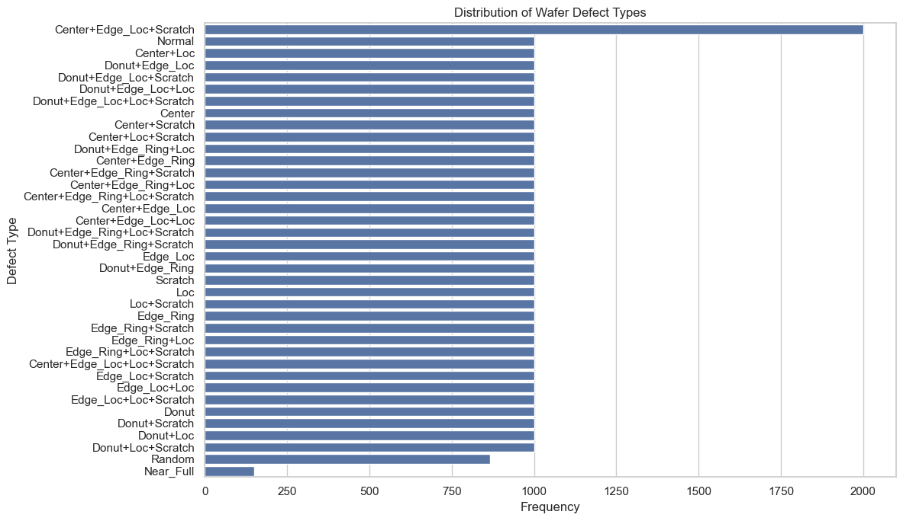
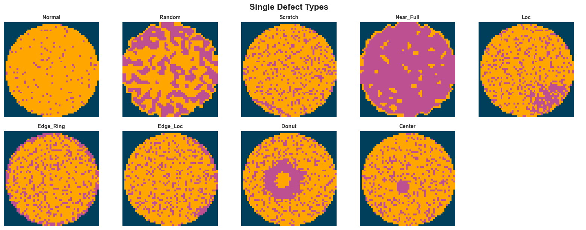
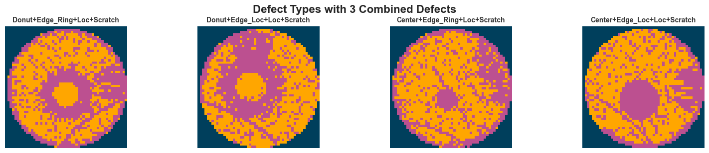
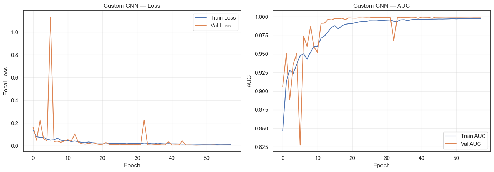
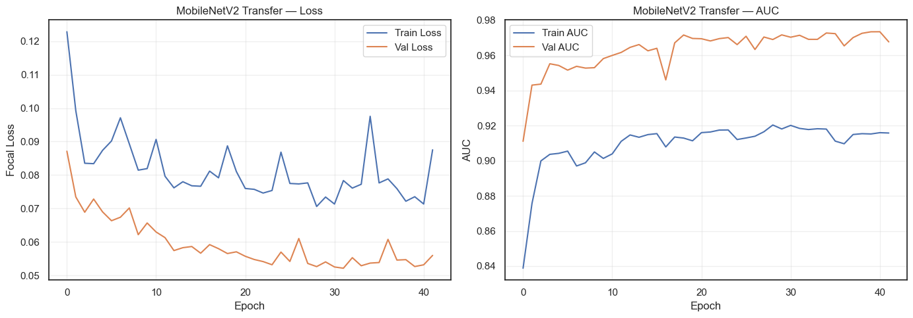
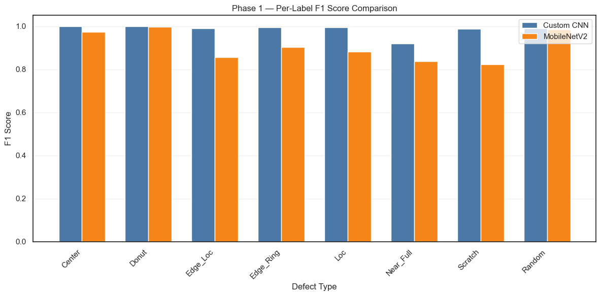
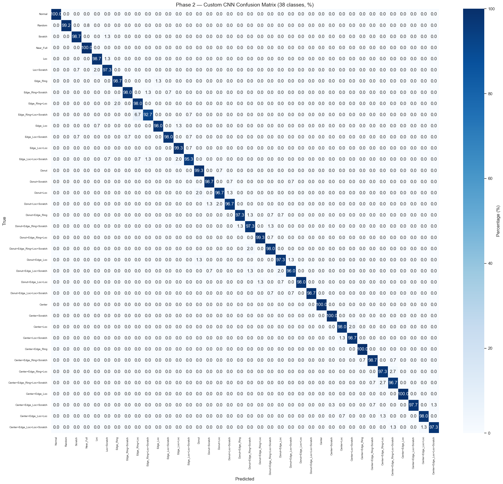

import os
import pickle
from collections import Counter
import dill
import matplotlib.pyplot as plt
import numpy as np
import pandas as pd
import seaborn as sns
import tensorflow as tf
from sklearn.model_selection import train_test_split
from tensorflow.keras import Model, layers
data_path = "../data/mixedtype-wafer-defect-datasets/Wafer_Map_Datasets.npz"
data = np.load(data_path)
images = data["arr_0"]
labels = data["arr_1"]Mixed-type Wafer Map Defect Dataset
- [‘arr_0’]: Defect data of mixed-type wafer map, 0 means blank spot, 1 represents normal die that passed the electrical test, and 2 represents broken die that failed the electrical test. The data shape is 52×52.
- [‘arr_1’]: Mixed-type wafer map defect label, using one-hot encoding, a total of 8 dimensions, corresponding to the 8 basic types of wafer map defects (single defect).
Data Exploration
Labels
# Basic summary of labels
print("Labels shape:", labels.shape)
print("Total entries:", labels.shape[0])
# Unique values across entire labels array
unique_vals = np.unique(labels)
print("Unique values:", unique_vals)
print("Number of unique values:", unique_vals.size)
# Missing data check
missing_count = np.isnan(labels).sum()
print("Missing values (NaN) count:", missing_count)
# Show a few example label rows
examples_df = pd.DataFrame(labels[:5])
print("Example label rows:")
display(examples_df)
# Unique row patterns count
unique_rows = np.unique(labels, axis=0)
print("Number of unique label patterns:", unique_rows.shape[0])Labels shape: (38015, 8)
Total entries: 38015
Unique values: [0 1]
Number of unique values: 2
Missing values (NaN) count: 0
Example label rows:| 0 | 1 | 2 | 3 | 4 | 5 | 6 | 7 | |
|---|---|---|---|---|---|---|---|---|
| 0 | 1 | 0 | 1 | 0 | 0 | 0 | 1 | 0 |
| 1 | 1 | 0 | 1 | 0 | 0 | 0 | 1 | 0 |
| 2 | 1 | 0 | 1 | 0 | 0 | 0 | 1 | 0 |
| 3 | 1 | 0 | 1 | 0 | 0 | 0 | 1 | 0 |
| 4 | 1 | 0 | 1 | 0 | 0 | 0 | 1 | 0 |
Number of unique label patterns: 38label_mapping = {
"00000000": "Normal",
"10000000": "Center",
"01000000": "Donut",
"00100000": "Edge_Loc",
"00010000": "Edge_Ring",
"00001000": "Loc",
"00000100": "Near_Full",
"00000010": "Scratch",
"00000001": "Random",
"10100000": "Center+Edge_Loc",
"10010000": "Center+Edge_Ring",
"10001000": "Center+Loc",
"10000010": "Center+Scratch",
"01100000": "Donut+Edge_Loc",
"01010000": "Donut+Edge_Ring",
"01001000": "Donut+Loc",
"01000010": "Donut+Scratch",
"00101000": "Edge_Loc+Loc",
"00100010": "Edge_Loc+Scratch",
"00011000": "Edge_Ring+Loc",
"00010010": "Edge_Ring+Scratch",
"00001010": "Loc+Scratch",
"10101000": "Center+Edge_Loc+Loc",
"10100010": "Center+Edge_Loc+Scratch",
"10011000": "Center+Edge_Ring+Loc",
"10010010": "Center+Edge_Ring+Scratch",
"10001010": "Center+Loc+Scratch",
"01101000": "Donut+Edge_Loc+Loc",
"01100010": "Donut+Edge_Loc+Scratch",
"01011000": "Donut+Edge_Ring+Loc",
"01010010": "Donut+Edge_Ring+Scratch",
"01001010": "Donut+Loc+Scratch",
"00101010": "Edge_Loc+Loc+Scratch",
"00011010": "Edge_Ring+Loc+Scratch",
"10101010": "Center+Edge_Loc+Loc+Scratch",
"10011010": "Center+Edge_Ring+Loc+Scratch",
"01101010": "Donut+Edge_Loc+Loc+Scratch",
"01011010": "Donut+Edge_Ring+Loc+Scratch",
}
# Convert one-hot vectors to string keys
label_str = ["".join(map(str, map(int, row))) for row in labels]
label_names = [label_mapping.get(key, "Unknown") for key in label_str]
# Count frequency
label_counts = Counter(label_str)
# Create DataFrame with label names
label_df = (
pd
.DataFrame([
{"OneHot": k, "Count": v, "LabelName": label_mapping.get(k, "Unknown")} for k, v in label_counts.items()
])
.sort_values("OneHot")
.reset_index(drop=True)
)
# plot label distribution with seaborn
sns.set_theme(style="whitegrid")
plt.figure(figsize=(12, 7))
sns.barplot(data=label_df, x="Count", y="LabelName", order=label_df.sort_values("Count", ascending=False)["LabelName"])
plt.xlabel("Frequency")
plt.ylabel("Defect Type")
plt.title("Distribution of Wafer Defect Types")
plt.tight_layout()
plt.show()
From the plot above, we can see that for most of the defect labels we have 1,000 images including the normal wafers. But for Center+Edge_loc+Scratch we have 2,000 images, for Random around 800 and for Near_Full an under representation of ~200 images.
Images
# Basic summary of images array
print("Images shape:", images.shape)
print("Total entries:", images.shape[0])
print("Single image shape:", images[0].shape)
print("Dtype:", images.dtype)
# Missing data check
missing_count_images = np.isnan(images).sum()
print("Missing values (NaN) count:", missing_count_images)
# Unique values across entire images array
unique_vals_images = np.unique(images)
print("Unique values:", unique_vals_images)
print("Number of unique values:", unique_vals_images.size)
# Count images with at least one pixel value of 3
images_with_3 = np.sum(np.any(images == 3, axis=(1, 2)))
print(f"Images with at least one pixel value of 3: {images_with_3}")
# in the images that have at least one pixel value of 3, tell me the average of many pixels have the value 3
images_with_3_pixels = images[np.any(images == 3, axis=(1, 2))]
count_3_pixels = np.sum(images_with_3_pixels == 3)
average_3_pixels = count_3_pixels / images_with_3
print(f"Average number of pixels with value 3 in those images: {average_3_pixels}")
# Show a few example images (as arrays)
sample_images = images[:3]
print("Sample image arrays:")
for i, img in enumerate(sample_images, start=1):
print(f"Image {i} shape: {img.shape}")
print(img)Images shape: (38015, 52, 52)
Total entries: 38015
Single image shape: (52, 52)
Dtype: int32
Missing values (NaN) count: 0
Unique values: [0 1 2 3]
Number of unique values: 4
Images with at least one pixel value of 3: 105
Average number of pixels with value 3 in those images: 2.038095238095238
Sample image arrays:
Image 1 shape: (52, 52)
[[0 0 0 ... 0 0 0]
[0 0 0 ... 0 0 0]
[0 0 0 ... 0 0 0]
...
[0 0 0 ... 0 0 0]
[0 0 0 ... 0 0 0]
[0 0 0 ... 0 0 0]]
Image 2 shape: (52, 52)
[[0 0 0 ... 0 0 0]
[0 0 0 ... 0 0 0]
[0 0 0 ... 0 0 0]
...
[0 0 0 ... 0 0 0]
[0 0 0 ... 0 0 0]
[0 0 0 ... 0 0 0]]
Image 3 shape: (52, 52)
[[0 0 0 ... 0 0 0]
[0 0 0 ... 0 0 0]
[0 0 0 ... 0 0 0]
...
[0 0 0 ... 0 0 0]
[0 0 0 ... 0 0 0]
[0 0 0 ... 0 0 0]]# make pixels with value 3 be 0
images[images == 3] = 0def convert_to_rgb(image):
height, width = image.shape
rgb_image = np.zeros((height, width, 3), dtype=np.uint8)
rgb_image[image == 0] = [0, 63, 92]
rgb_image[image == 1] = [255, 166, 0]
rgb_image[image == 2] = [188, 80, 144]
return rgb_image
# Separate labels by number of defects (number of '+' in label name)
unique_labels = label_df["LabelName"].tolist()
labels_by_defect_count = {0: [], 1: [], 2: [], 3: []}
for label_name in unique_labels:
plus_count = label_name.count("+")
labels_by_defect_count[plus_count].append(label_name)
# Plot each group separately
sns.set_theme(style="white")
for defect_count, labels_group in labels_by_defect_count.items():
if not labels_group:
continue
n_labels = len(labels_group)
n_cols = min(5, n_labels)
n_rows = (n_labels + n_cols - 1) // n_cols
fig, axes = plt.subplots(n_rows, n_cols, figsize=(16, n_rows * 3))
axes = [axes] if n_labels == 1 else axes.flatten() if n_rows > 1 else axes
for idx, label_name in enumerate(labels_group):
label_idx = label_names.index(label_name)
rgb_image = convert_to_rgb(images[label_idx])
axes[idx].imshow(rgb_image)
axes[idx].set_title(label_name, fontsize=10, fontweight="bold", color="#333333")
axes[idx].axis("off")
axes[idx].spines["top"].set_visible(False)
axes[idx].spines["right"].set_visible(False)
axes[idx].spines["bottom"].set_visible(False)
axes[idx].spines["left"].set_visible(False)
# Hide unused subplots
for idx in range(n_labels, len(axes)):
axes[idx].axis("off")
fig.patch.set_facecolor("white")
plt.axis("off")
plt.tight_layout()
# Add a suptitle for the group
if defect_count == 0:
fig.suptitle("Single Defect Types", fontsize=16, fontweight="bold", y=1.02)
else:
fig.suptitle(f"Defect Types with {defect_count} Combined Defects", fontsize=16, fontweight="bold", y=1.02)
plt.show()



Step 1 — Data Preprocessing
Convert each (52, 52) image to (52, 52, 4) via one-hot encoding of the 4 pixel states: - Channel 0: blank (pixel == 0) - Channel 1: normal die (pixel == 1) - Channel 2: broken die (pixel == 2) - Channel 3: undocumented state (pixel == 3, found in data exploration)
This preserves the categorical nature of the data — these are discrete states, not intensity values.
# One-hot encode pixel values: (N, 52, 52) -> (N, 52, 52, 3)
# Channel 0 = blank (0), Channel 1 = normal (1), Channel 2 = broken (2).
images_onehot = np.eye(3, dtype=np.float32)[images.astype(int)]
print("Original images shape:", images.shape)
print("One-hot encoded shape:", images_onehot.shape)
print("Labels shape:", labels.shape)
print("Dtype:", images_onehot.dtype)
# Verify encoding: show channel sums for first image
sample = images_onehot[0]
print("\nVerification — channel sums for first image:")
for ch in range(3):
print(f" Channel {ch} (pixel={ch}): {sample[:, :, ch].sum():.0f} pixels")Original images shape: (38015, 52, 52)
One-hot encoded shape: (38015, 52, 52, 3)
Labels shape: (38015, 8)
Dtype: float32
Verification — channel sums for first image:
Channel 0 (pixel=0): 643 pixels
Channel 1 (pixel=1): 1441 pixels
Channel 2 (pixel=2): 620 pixelsStep 2 — Train / Validation / Test Split
Using iterative stratification for multi-label data. Since sklearn’s train_test_split only supports single-label stratification, we convert the 8-dim one-hot vectors to string keys and stratify on those to ensure all 38 unique patterns are represented in every split.
Split ratio: 70% train / 15% validation / 15% test
# Create string keys for stratification (each unique label pattern = one stratum)
label_str_arr = np.array(["".join(map(str, map(int, row))) for row in labels])
# First split: 70% train, 30% temp
X_train, X_temp, y_train, y_temp, str_train, str_temp = train_test_split(
images_onehot,
labels,
label_str_arr,
test_size=0.30,
random_state=42,
stratify=label_str_arr,
)
# Second split: 50/50 of temp -> 15% val, 15% test
X_val, X_test, y_val, y_test, str_val, str_test = train_test_split(
X_temp,
y_temp,
str_temp,
test_size=0.50,
random_state=42,
stratify=str_temp,
)
print(f"Train: {X_train.shape[0]} samples")
print(f"Val: {X_val.shape[0]} samples")
print(f"Test: {X_test.shape[0]} samples")
# Verify: check that all 38 patterns are present in each split
for name, strs in [("Train", str_train), ("Val", str_val), ("Test", str_test)]:
unique_patterns = len(set(strs))
print(f" {name} — unique patterns: {unique_patterns}")
# Show per-label distribution across splits
base_labels = ["Center", "Donut", "Edge_Loc", "Edge_Ring", "Loc", "Near_Full", "Scratch", "Random"]
print("\nPer-label sample counts:")
header = f"{'Label':<12} {'Train':>6} {'Val':>6} {'Test':>6}"
print(header)
for i, name in enumerate(base_labels):
tr = y_train[:, i].sum()
va = y_val[:, i].sum()
te = y_test[:, i].sum()
print(f"{name:<12} {tr:>6.0f} {va:>6.0f} {te:>6.0f}")Train: 26610 samples
Val: 5702 samples
Test: 5703 samples
Train — unique patterns: 38
Val — unique patterns: 38
Test — unique patterns: 38
Per-label sample counts:
Label Train Val Test
Center 9100 1950 1950
Donut 8400 1800 1800
Edge_Loc 9100 1950 1950
Edge_Ring 8400 1800 1800
Loc 12600 2700 2700
Near_Full 104 22 23
Scratch 13300 2850 2850
Random 606 130 130Step 3 — Data Augmentation
Apply geometrically valid augmentations (rotations, flips, shifts) since wafer maps are rotationally symmetric. We create a tf.data pipeline with augmentation applied only during training.
We avoid elastic deformations and color jitter — the pixel values are discrete categorical states, not continuous intensities.
BATCH_SIZE = 32
AUTOTUNE = tf.data.AUTOTUNE
def augment(image, label):
"""Apply random geometric augmentations to a single image.
Since pixel values are one-hot encoded categorical states,
we only use spatial transforms (rotations, flips) that preserve
the discrete channel structure.
"""
# Random 90-degree rotations (k=0,1,2,3)
k = tf.random.uniform([], 0, 4, dtype=tf.int32)
image = tf.image.rot90(image, k=k)
# Random horizontal and vertical flips
image = tf.image.random_flip_left_right(image)
image = tf.image.random_flip_up_down(image)
return image, label
def build_dataset(x, y, *, shuffle=False, augment_fn=None, batch_size=BATCH_SIZE):
"""Create a tf.data.Dataset with optional shuffling and augmentation."""
ds = tf.data.Dataset.from_tensor_slices((x, y))
if shuffle:
ds = ds.shuffle(buffer_size=len(x), seed=42)
if augment_fn is not None:
ds = ds.map(augment_fn, num_parallel_calls=AUTOTUNE)
ds = ds.batch(batch_size).prefetch(AUTOTUNE)
return ds
# Build datasets
train_ds = build_dataset(X_train, y_train, shuffle=True, augment_fn=augment)
val_ds = build_dataset(X_val, y_val)
test_ds = build_dataset(X_test, y_test)
# Verify shapes
for batch_images, batch_labels in train_ds.take(1):
print("Batch images shape:", batch_images.shape)
print("Batch labels shape:", batch_labels.shape)
print("Image value range:", batch_images.numpy().min(), "to", batch_images.numpy().max())Batch images shape: (32, 52, 52, 3)
Batch labels shape: (32, 8)
Image value range: 0.0 to 1.0Step 4 — Focal Loss & Class Weights
Focal Loss down-weights easy/frequent examples and focuses learning on hard/rare ones. Combined with per-label weights (inversely proportional to frequency), this handles the severe imbalance between Normal (~1000) and Near_Full (~200).
\[FL(p_t) = -\alpha_t (1 - p_t)^\gamma \log(p_t)\]
- \(\alpha_t\): per-label weight (higher for rare classes)
- \(\gamma\): focusing parameter (typically 2.0)
# Compute per-label positive weights for the 8 base defect types
# Weight = (total_neg / total_pos) for each label column
n_samples = y_train.shape[0]
pos_counts = y_train.sum(axis=0) # shape (8,)
neg_counts = n_samples - pos_counts
# Avoid division by zero; labels with 0 positives get weight 1.0
pos_weights = np.where(pos_counts > 0, neg_counts / pos_counts, 1.0)
pos_weights_tensor = tf.constant(pos_weights, dtype=tf.float32)
print("Per-label positive weights:")
base_labels_names = ["Center", "Donut", "Edge_Loc", "Edge_Ring", "Loc", "Near_Full", "Scratch", "Random"]
for name, w, pc in zip(base_labels_names, pos_weights, pos_counts, strict=True):
print(f" {name:<12} weight={w:>6.2f} (pos_count={pc:.0f})")
class BinaryFocalLoss(tf.keras.losses.Loss):
"""Binary focal loss for multi-label classification.
Applies focal modulation per label to down-weight easy examples
and focus on hard/rare ones. Supports per-label positive weights.
"""
def __init__(self, gamma=2.0, pos_weight=None, **kwargs):
super().__init__(**kwargs)
self.gamma = gamma
self.pos_weight = pos_weight # shape (num_labels,)
def call(self, y_true, y_pred):
y_true = tf.cast(y_true, tf.float32)
y_pred = tf.clip_by_value(y_pred, 1e-7, 1.0 - 1e-7)
# Standard binary cross-entropy components
bce_pos = -y_true * tf.math.log(y_pred)
bce_neg = -(1.0 - y_true) * tf.math.log(1.0 - y_pred)
# Focal modulation: (1 - p_t)^gamma
p_t = y_true * y_pred + (1.0 - y_true) * (1.0 - y_pred)
focal_weight = tf.pow(1.0 - p_t, self.gamma)
# Apply per-label positive weights
alpha = y_true * self.pos_weight + (1.0 - y_true) * 1.0 if self.pos_weight is not None else 1.0
loss = focal_weight * alpha * (bce_pos + bce_neg)
return tf.reduce_mean(loss, axis=-1)
focal_loss = BinaryFocalLoss(gamma=2.0, pos_weight=pos_weights_tensor)
print("\nFocal Loss initialized with gamma=2.0")Per-label positive weights:
Center weight= 1.92 (pos_count=9100)
Donut weight= 2.17 (pos_count=8400)
Edge_Loc weight= 1.92 (pos_count=9100)
Edge_Ring weight= 2.17 (pos_count=8400)
Loc weight= 1.11 (pos_count=12600)
Near_Full weight=254.87 (pos_count=104)
Scratch weight= 1.00 (pos_count=13300)
Random weight= 42.91 (pos_count=606)
Focal Loss initialized with gamma=2.0Step 5 — Model 1A: Custom CNN
A lightweight CNN designed for the (52, 52, 3) input size: - 4 Conv2D blocks (32 → 64 → 128 → 256 filters), each with BatchNormalization + ReLU + MaxPooling - GlobalAveragePooling2D (reduces overfitting vs Flatten) - Dense(128) → Dropout(0.5) → Dense(8, sigmoid)
Output: 8 independent sigmoid activations for multi-label classification.
def build_custom_cnn(input_shape=(52, 52, 3), num_labels=8):
"""Build a lightweight CNN for multi-label wafer defect classification.
Architecture:
4 Conv blocks (32→64→128→256) with BatchNorm + ReLU + MaxPool
GlobalAveragePooling → Dense(128) → Dropout → Dense(num_labels, sigmoid)
"""
inputs = layers.Input(shape=input_shape, name="input_image")
x = inputs
for filters in [32, 64, 128, 256]:
x = layers.Conv2D(filters, (3, 3), padding="same")(x)
x = layers.BatchNormalization()(x)
x = layers.Activation("relu")(x)
x = layers.MaxPooling2D((2, 2))(x)
x = layers.GlobalAveragePooling2D()(x)
x = layers.Dense(128, activation="relu")(x)
x = layers.Dropout(0.5)(x)
outputs = layers.Dense(num_labels, activation="sigmoid", name="output")(x)
return Model(inputs, outputs, name="custom_cnn")
model_cnn = build_custom_cnn()
model_cnn.summary()Model: "custom_cnn"
┏━━━━━━━━━━━━━━━━━━━━━━━━━━━━━━━━━┳━━━━━━━━━━━━━━━━━━━━━━━━┳━━━━━━━━━━━━━━━┓ ┃ Layer (type) ┃ Output Shape ┃ Param # ┃ ┡━━━━━━━━━━━━━━━━━━━━━━━━━━━━━━━━━╇━━━━━━━━━━━━━━━━━━━━━━━━╇━━━━━━━━━━━━━━━┩ │ input_image (InputLayer) │ (None, 52, 52, 3) │ 0 │ ├─────────────────────────────────┼────────────────────────┼───────────────┤ │ conv2d_15 (Conv2D) │ (None, 52, 52, 32) │ 896 │ ├─────────────────────────────────┼────────────────────────┼───────────────┤ │ batch_normalization_12 │ (None, 52, 52, 32) │ 128 │ │ (BatchNormalization) │ │ │ ├─────────────────────────────────┼────────────────────────┼───────────────┤ │ activation_12 (Activation) │ (None, 52, 52, 32) │ 0 │ ├─────────────────────────────────┼────────────────────────┼───────────────┤ │ max_pooling2d_12 (MaxPooling2D) │ (None, 26, 26, 32) │ 0 │ ├─────────────────────────────────┼────────────────────────┼───────────────┤ │ conv2d_16 (Conv2D) │ (None, 26, 26, 64) │ 18,496 │ ├─────────────────────────────────┼────────────────────────┼───────────────┤ │ batch_normalization_13 │ (None, 26, 26, 64) │ 256 │ │ (BatchNormalization) │ │ │ ├─────────────────────────────────┼────────────────────────┼───────────────┤ │ activation_13 (Activation) │ (None, 26, 26, 64) │ 0 │ ├─────────────────────────────────┼────────────────────────┼───────────────┤ │ max_pooling2d_13 (MaxPooling2D) │ (None, 13, 13, 64) │ 0 │ ├─────────────────────────────────┼────────────────────────┼───────────────┤ │ conv2d_17 (Conv2D) │ (None, 13, 13, 128) │ 73,856 │ ├─────────────────────────────────┼────────────────────────┼───────────────┤ │ batch_normalization_14 │ (None, 13, 13, 128) │ 512 │ │ (BatchNormalization) │ │ │ ├─────────────────────────────────┼────────────────────────┼───────────────┤ │ activation_14 (Activation) │ (None, 13, 13, 128) │ 0 │ ├─────────────────────────────────┼────────────────────────┼───────────────┤ │ max_pooling2d_14 (MaxPooling2D) │ (None, 6, 6, 128) │ 0 │ ├─────────────────────────────────┼────────────────────────┼───────────────┤ │ conv2d_18 (Conv2D) │ (None, 6, 6, 256) │ 295,168 │ ├─────────────────────────────────┼────────────────────────┼───────────────┤ │ batch_normalization_15 │ (None, 6, 6, 256) │ 1,024 │ │ (BatchNormalization) │ │ │ ├─────────────────────────────────┼────────────────────────┼───────────────┤ │ activation_15 (Activation) │ (None, 6, 6, 256) │ 0 │ ├─────────────────────────────────┼────────────────────────┼───────────────┤ │ max_pooling2d_15 (MaxPooling2D) │ (None, 3, 3, 256) │ 0 │ ├─────────────────────────────────┼────────────────────────┼───────────────┤ │ global_average_pooling2d_6 │ (None, 256) │ 0 │ │ (GlobalAveragePooling2D) │ │ │ ├─────────────────────────────────┼────────────────────────┼───────────────┤ │ dense_9 (Dense) │ (None, 128) │ 32,896 │ ├─────────────────────────────────┼────────────────────────┼───────────────┤ │ dropout_9 (Dropout) │ (None, 128) │ 0 │ ├─────────────────────────────────┼────────────────────────┼───────────────┤ │ output (Dense) │ (None, 8) │ 1,032 │ └─────────────────────────────────┴────────────────────────┴───────────────┘
Total params: 424,264 (1.62 MB)
Trainable params: 423,304 (1.61 MB)
Non-trainable params: 960 (3.75 KB)
Step 6 — Model 1B: Transfer Learning (MobileNetV2)
Project (52, 52, 4) → (52, 52, 3) with Conv2D, then resize to (224, 224, 3) to match MobileNetV2’s expected input. Use the pre-trained ImageNet backbone as a frozen feature extractor, with a custom multi-label classification head.
Note: ImageNet features (edges, textures) should still transfer reasonably well to wafer map patterns.
TARGET_SIZE = (224, 224)
def build_mobilenet_model(input_shape=(52, 52, 3), target_size=TARGET_SIZE, num_labels=8):
"""Build a MobileNetV2 transfer learning model for multi-label classification.
Projects (52,52,4) inputs to (52,52,3), then resizes to (224,224,3),
then passes through a frozen MobileNetV2 backbone with a custom head.
"""
inputs = layers.Input(shape=input_shape, name="input_image")
# Project 4 channels to 3 for MobileNetV2 compatibility
x = layers.Conv2D(3, (1, 1), padding="same", activation="relu")(inputs)
# Resize to MobileNetV2-compatible dimensions
x = layers.Resizing(target_size[0], target_size[1], interpolation="bilinear")(x)
# Frozen MobileNetV2 backbone
base_model = tf.keras.applications.MobileNetV2(
input_shape=(target_size[0], target_size[1], 3),
include_top=False,
weights="imagenet",
)
base_model.trainable = False
x = base_model(x, training=False)
x = layers.GlobalAveragePooling2D()(x)
x = layers.Dense(256, activation="relu")(x)
x = layers.Dropout(0.5)(x)
outputs = layers.Dense(num_labels, activation="sigmoid", name="output")(x)
return Model(inputs, outputs, name="mobilenet_transfer"), base_model
model_tl, base_model_tl = build_mobilenet_model()
model_tl.summary()
# Verify frozen layers
trainable = sum(1 for layer in base_model_tl.layers if layer.trainable)
total = len(base_model_tl.layers)
print(f"\nMobileNetV2 base: {trainable}/{total} trainable layers (should be 0/{total})")Model: "mobilenet_transfer"
┏━━━━━━━━━━━━━━━━━━━━━━━━━━━━━━━━━┳━━━━━━━━━━━━━━━━━━━━━━━━┳━━━━━━━━━━━━━━━┓ ┃ Layer (type) ┃ Output Shape ┃ Param # ┃ ┡━━━━━━━━━━━━━━━━━━━━━━━━━━━━━━━━━╇━━━━━━━━━━━━━━━━━━━━━━━━╇━━━━━━━━━━━━━━━┩ │ input_image (InputLayer) │ (None, 52, 52, 3) │ 0 │ ├─────────────────────────────────┼────────────────────────┼───────────────┤ │ conv2d_19 (Conv2D) │ (None, 52, 52, 3) │ 12 │ ├─────────────────────────────────┼────────────────────────┼───────────────┤ │ resizing_3 (Resizing) │ (None, 224, 224, 3) │ 0 │ ├─────────────────────────────────┼────────────────────────┼───────────────┤ │ mobilenetv2_1.00_224 │ (None, 7, 7, 1280) │ 2,257,984 │ │ (Functional) │ │ │ ├─────────────────────────────────┼────────────────────────┼───────────────┤ │ global_average_pooling2d_7 │ (None, 1280) │ 0 │ │ (GlobalAveragePooling2D) │ │ │ ├─────────────────────────────────┼────────────────────────┼───────────────┤ │ dense_10 (Dense) │ (None, 256) │ 327,936 │ ├─────────────────────────────────┼────────────────────────┼───────────────┤ │ dropout_10 (Dropout) │ (None, 256) │ 0 │ ├─────────────────────────────────┼────────────────────────┼───────────────┤ │ output (Dense) │ (None, 8) │ 2,056 │ └─────────────────────────────────┴────────────────────────┴───────────────┘
Total params: 2,587,988 (9.87 MB)
Trainable params: 330,004 (1.26 MB)
Non-trainable params: 2,257,984 (8.61 MB)
MobileNetV2 base: 0/154 trainable layers (should be 0/154)Step 7 — Training
Both models are trained with: - Loss: Binary Focal Loss (gamma=2.0, per-label pos_weights) - Optimizer: Adam (lr=1e-3) - Callbacks: ReduceLROnPlateau(patience=5), EarlyStopping(patience=10, restore_best_weights=True) - Metrics: AUC (per-label average), binary accuracy - Epochs: up to 100 (early stopping will cut it short)
EPOCHS = 100
callbacks = [
tf.keras.callbacks.ReduceLROnPlateau(
monitor="val_loss",
factor=0.5,
patience=5,
min_lr=1e-6,
verbose=1,
),
tf.keras.callbacks.EarlyStopping(
monitor="val_loss",
patience=10,
restore_best_weights=True,
verbose=1,
),
]
metrics = [
tf.keras.metrics.AUC(name="auc", multi_label=True),
tf.keras.metrics.BinaryAccuracy(name="binary_acc"),
]Train Model 1A — Custom CNN
model_cnn.compile(
optimizer=tf.keras.optimizers.Adam(learning_rate=1e-3),
loss=focal_loss,
metrics=metrics,
)
history_cnn = model_cnn.fit(
train_ds,
validation_data=val_ds,
epochs=EPOCHS,
callbacks=callbacks,
verbose=1,
)Epoch 1/100 832/832 ━━━━━━━━━━━━━━━━━━━━ 29s 31ms/step - auc: 0.8462 - binary_acc: 0.7894 - loss: 0.1360 - val_auc: 0.9062 - val_binary_acc: 0.7646 - val_loss: 0.1617 - learning_rate: 0.0010 Epoch 2/100 832/832 ━━━━━━━━━━━━━━━━━━━━ 25s 30ms/step - auc: 0.9133 - binary_acc: 0.8720 - loss: 0.0803 - val_auc: 0.9506 - val_binary_acc: 0.9277 - val_loss: 0.0491 - learning_rate: 0.0010 Epoch 3/100 832/832 ━━━━━━━━━━━━━━━━━━━━ 25s 30ms/step - auc: 0.9279 - binary_acc: 0.8861 - loss: 0.0731 - val_auc: 0.8890 - val_binary_acc: 0.7930 - val_loss: 0.2278 - learning_rate: 0.0010 Epoch 4/100 832/832 ━━━━━━━━━━━━━━━━━━━━ 25s 30ms/step - auc: 0.9234 - binary_acc: 0.8840 - loss: 0.0738 - val_auc: 0.9355 - val_binary_acc: 0.9028 - val_loss: 0.0614 - learning_rate: 0.0010 Epoch 5/100 832/832 ━━━━━━━━━━━━━━━━━━━━ 25s 30ms/step - auc: 0.9362 - binary_acc: 0.9040 - loss: 0.0580 - val_auc: 0.9511 - val_binary_acc: 0.9243 - val_loss: 0.0436 - learning_rate: 0.0010 Epoch 6/100 832/832 ━━━━━━━━━━━━━━━━━━━━ 25s 30ms/step - auc: 0.9477 - binary_acc: 0.9185 - loss: 0.0501 - val_auc: 0.8275 - val_binary_acc: 0.7034 - val_loss: 1.1311 - learning_rate: 0.0010 Epoch 7/100 832/832 ━━━━━━━━━━━━━━━━━━━━ 25s 30ms/step - auc: 0.9503 - binary_acc: 0.9214 - loss: 0.0524 - val_auc: 0.9743 - val_binary_acc: 0.9452 - val_loss: 0.0375 - learning_rate: 0.0010 Epoch 8/100 832/832 ━━━━━━━━━━━━━━━━━━━━ 25s 30ms/step - auc: 0.9428 - binary_acc: 0.9077 - loss: 0.0663 - val_auc: 0.9595 - val_binary_acc: 0.9287 - val_loss: 0.0410 - learning_rate: 0.0010 Epoch 9/100 832/832 ━━━━━━━━━━━━━━━━━━━━ 25s 30ms/step - auc: 0.9527 - binary_acc: 0.9243 - loss: 0.0491 - val_auc: 0.9869 - val_binary_acc: 0.9669 - val_loss: 0.0308 - learning_rate: 0.0010 Epoch 10/100 832/832 ━━━━━━━━━━━━━━━━━━━━ 25s 30ms/step - auc: 0.9605 - binary_acc: 0.9325 - loss: 0.0466 - val_auc: 0.9594 - val_binary_acc: 0.9280 - val_loss: 0.0420 - learning_rate: 0.0010 Epoch 11/100 832/832 ━━━━━━━━━━━━━━━━━━━━ 24s 29ms/step - auc: 0.9599 - binary_acc: 0.9329 - loss: 0.0455 - val_auc: 0.9519 - val_binary_acc: 0.9225 - val_loss: 0.0534 - learning_rate: 0.0010 Epoch 12/100 832/832 ━━━━━━━━━━━━━━━━━━━━ 24s 29ms/step - auc: 0.9713 - binary_acc: 0.9466 - loss: 0.0373 - val_auc: 0.9912 - val_binary_acc: 0.9347 - val_loss: 0.0403 - learning_rate: 0.0010 Epoch 13/100 832/832 ━━━━━━━━━━━━━━━━━━━━ 25s 29ms/step - auc: 0.9742 - binary_acc: 0.9471 - loss: 0.0424 - val_auc: 0.9914 - val_binary_acc: 0.8903 - val_loss: 0.1051 - learning_rate: 0.0010 Epoch 14/100 831/832 ━━━━━━━━━━━━━━━━━━━━ 0s 28ms/step - auc: 0.9739 - binary_acc: 0.9529 - loss: 0.0377 Epoch 14: ReduceLROnPlateau reducing learning rate to 0.0005000000237487257. 832/832 ━━━━━━━━━━━━━━━━━━━━ 25s 30ms/step - auc: 0.9797 - binary_acc: 0.9551 - loss: 0.0360 - val_auc: 0.9965 - val_binary_acc: 0.9526 - val_loss: 0.0333 - learning_rate: 0.0010 Epoch 15/100 832/832 ━━━━━━━━━━━━━━━━━━━━ 25s 29ms/step - auc: 0.9857 - binary_acc: 0.9635 - loss: 0.0304 - val_auc: 0.9959 - val_binary_acc: 0.9825 - val_loss: 0.0180 - learning_rate: 5.0000e-04 Epoch 16/100 832/832 ━━━━━━━━━━━━━━━━━━━━ 25s 29ms/step - auc: 0.9880 - binary_acc: 0.9668 - loss: 0.0275 - val_auc: 0.9975 - val_binary_acc: 0.9869 - val_loss: 0.0152 - learning_rate: 5.0000e-04 Epoch 17/100 832/832 ━━━━━━━━━━━━━━━━━━━━ 25s 30ms/step - auc: 0.9836 - binary_acc: 0.9591 - loss: 0.0339 - val_auc: 0.9974 - val_binary_acc: 0.9754 - val_loss: 0.0215 - learning_rate: 5.0000e-04 Epoch 18/100 832/832 ━━━━━━━━━━━━━━━━━━━━ 24s 29ms/step - auc: 0.9879 - binary_acc: 0.9674 - loss: 0.0275 - val_auc: 0.9980 - val_binary_acc: 0.9865 - val_loss: 0.0153 - learning_rate: 5.0000e-04 Epoch 19/100 832/832 ━━━━━━━━━━━━━━━━━━━━ 24s 29ms/step - auc: 0.9900 - binary_acc: 0.9698 - loss: 0.0256 - val_auc: 0.9964 - val_binary_acc: 0.9729 - val_loss: 0.0200 - learning_rate: 5.0000e-04 Epoch 20/100 832/832 ━━━━━━━━━━━━━━━━━━━━ 24s 29ms/step - auc: 0.9907 - binary_acc: 0.9713 - loss: 0.0248 - val_auc: 0.9984 - val_binary_acc: 0.9926 - val_loss: 0.0126 - learning_rate: 5.0000e-04 Epoch 21/100 832/832 ━━━━━━━━━━━━━━━━━━━━ 24s 29ms/step - auc: 0.9910 - binary_acc: 0.9716 - loss: 0.0252 - val_auc: 0.9982 - val_binary_acc: 0.9912 - val_loss: 0.0139 - learning_rate: 5.0000e-04 Epoch 22/100 832/832 ━━━━━━━━━━━━━━━━━━━━ 24s 29ms/step - auc: 0.9921 - binary_acc: 0.9730 - loss: 0.0246 - val_auc: 0.9981 - val_binary_acc: 0.9747 - val_loss: 0.0294 - learning_rate: 5.0000e-04 Epoch 23/100 832/832 ━━━━━━━━━━━━━━━━━━━━ 25s 30ms/step - auc: 0.9931 - binary_acc: 0.9754 - loss: 0.0219 - val_auc: 0.9985 - val_binary_acc: 0.9909 - val_loss: 0.0109 - learning_rate: 5.0000e-04 Epoch 24/100 832/832 ━━━━━━━━━━━━━━━━━━━━ 25s 29ms/step - auc: 0.9938 - binary_acc: 0.9759 - loss: 0.0222 - val_auc: 0.9983 - val_binary_acc: 0.9904 - val_loss: 0.0122 - learning_rate: 5.0000e-04 Epoch 25/100 832/832 ━━━━━━━━━━━━━━━━━━━━ 24s 29ms/step - auc: 0.9938 - binary_acc: 0.9763 - loss: 0.0219 - val_auc: 0.9985 - val_binary_acc: 0.9916 - val_loss: 0.0110 - learning_rate: 5.0000e-04 Epoch 26/100 832/832 ━━━━━━━━━━━━━━━━━━━━ 25s 30ms/step - auc: 0.9947 - binary_acc: 0.9774 - loss: 0.0207 - val_auc: 0.9984 - val_binary_acc: 0.9876 - val_loss: 0.0143 - learning_rate: 5.0000e-04 Epoch 27/100 832/832 ━━━━━━━━━━━━━━━━━━━━ 25s 30ms/step - auc: 0.9946 - binary_acc: 0.9778 - loss: 0.0209 - val_auc: 0.9990 - val_binary_acc: 0.9946 - val_loss: 0.0098 - learning_rate: 5.0000e-04 Epoch 28/100 832/832 ━━━━━━━━━━━━━━━━━━━━ 25s 29ms/step - auc: 0.9946 - binary_acc: 0.9770 - loss: 0.0241 - val_auc: 0.9988 - val_binary_acc: 0.9923 - val_loss: 0.0115 - learning_rate: 5.0000e-04 Epoch 29/100 832/832 ━━━━━━━━━━━━━━━━━━━━ 25s 29ms/step - auc: 0.9950 - binary_acc: 0.9780 - loss: 0.0209 - val_auc: 0.9991 - val_binary_acc: 0.9932 - val_loss: 0.0109 - learning_rate: 5.0000e-04 Epoch 30/100 832/832 ━━━━━━━━━━━━━━━━━━━━ 25s 30ms/step - auc: 0.9953 - binary_acc: 0.9796 - loss: 0.0203 - val_auc: 0.9990 - val_binary_acc: 0.9945 - val_loss: 0.0096 - learning_rate: 5.0000e-04 Epoch 31/100 832/832 ━━━━━━━━━━━━━━━━━━━━ 25s 29ms/step - auc: 0.9955 - binary_acc: 0.9798 - loss: 0.0195 - val_auc: 0.9988 - val_binary_acc: 0.9946 - val_loss: 0.0106 - learning_rate: 5.0000e-04 Epoch 32/100 832/832 ━━━━━━━━━━━━━━━━━━━━ 25s 30ms/step - auc: 0.9958 - binary_acc: 0.9807 - loss: 0.0189 - val_auc: 0.9991 - val_binary_acc: 0.9950 - val_loss: 0.0090 - learning_rate: 5.0000e-04 Epoch 33/100 832/832 ━━━━━━━━━━━━━━━━━━━━ 24s 29ms/step - auc: 0.9940 - binary_acc: 0.9762 - loss: 0.0243 - val_auc: 0.9677 - val_binary_acc: 0.9147 - val_loss: 0.2258 - learning_rate: 5.0000e-04 Epoch 34/100 832/832 ━━━━━━━━━━━━━━━━━━━━ 24s 29ms/step - auc: 0.9938 - binary_acc: 0.9759 - loss: 0.0227 - val_auc: 0.9990 - val_binary_acc: 0.9944 - val_loss: 0.0091 - learning_rate: 5.0000e-04 Epoch 35/100 832/832 ━━━━━━━━━━━━━━━━━━━━ 24s 29ms/step - auc: 0.9959 - binary_acc: 0.9811 - loss: 0.0183 - val_auc: 0.9993 - val_binary_acc: 0.9951 - val_loss: 0.0074 - learning_rate: 5.0000e-04 Epoch 36/100 832/832 ━━━━━━━━━━━━━━━━━━━━ 25s 30ms/step - auc: 0.9961 - binary_acc: 0.9818 - loss: 0.0180 - val_auc: 0.9989 - val_binary_acc: 0.9936 - val_loss: 0.0097 - learning_rate: 5.0000e-04 Epoch 37/100 832/832 ━━━━━━━━━━━━━━━━━━━━ 24s 29ms/step - auc: 0.9949 - binary_acc: 0.9783 - loss: 0.0246 - val_auc: 0.9991 - val_binary_acc: 0.9928 - val_loss: 0.0112 - learning_rate: 5.0000e-04 Epoch 38/100 832/832 ━━━━━━━━━━━━━━━━━━━━ 24s 29ms/step - auc: 0.9961 - binary_acc: 0.9815 - loss: 0.0183 - val_auc: 0.9994 - val_binary_acc: 0.9948 - val_loss: 0.0083 - learning_rate: 5.0000e-04 Epoch 39/100 832/832 ━━━━━━━━━━━━━━━━━━━━ 24s 29ms/step - auc: 0.9966 - binary_acc: 0.9830 - loss: 0.0168 - val_auc: 0.9993 - val_binary_acc: 0.9952 - val_loss: 0.0081 - learning_rate: 5.0000e-04 Epoch 40/100 831/832 ━━━━━━━━━━━━━━━━━━━━ 0s 28ms/step - auc: 0.9945 - binary_acc: 0.9816 - loss: 0.0182 Epoch 40: ReduceLROnPlateau reducing learning rate to 0.0002500000118743628. 832/832 ━━━━━━━━━━━━━━━━━━━━ 24s 29ms/step - auc: 0.9962 - binary_acc: 0.9816 - loss: 0.0185 - val_auc: 0.9978 - val_binary_acc: 0.9691 - val_loss: 0.0347 - learning_rate: 5.0000e-04 Epoch 41/100 832/832 ━━━━━━━━━━━━━━━━━━━━ 25s 30ms/step - auc: 0.9966 - binary_acc: 0.9833 - loss: 0.0167 - val_auc: 0.9994 - val_binary_acc: 0.9960 - val_loss: 0.0067 - learning_rate: 2.5000e-04 Epoch 42/100 832/832 ━━━━━━━━━━━━━━━━━━━━ 24s 29ms/step - auc: 0.9965 - binary_acc: 0.9833 - loss: 0.0168 - val_auc: 0.9993 - val_binary_acc: 0.9954 - val_loss: 0.0084 - learning_rate: 2.5000e-04 Epoch 43/100 832/832 ━━━━━━━━━━━━━━━━━━━━ 24s 29ms/step - auc: 0.9968 - binary_acc: 0.9836 - loss: 0.0162 - val_auc: 0.9993 - val_binary_acc: 0.9956 - val_loss: 0.0080 - learning_rate: 2.5000e-04 Epoch 44/100 832/832 ━━━━━━━━━━━━━━━━━━━━ 24s 29ms/step - auc: 0.9968 - binary_acc: 0.9842 - loss: 0.0155 - val_auc: 0.9979 - val_binary_acc: 0.9637 - val_loss: 0.0433 - learning_rate: 2.5000e-04 Epoch 45/100 832/832 ━━━━━━━━━━━━━━━━━━━━ 25s 29ms/step - auc: 0.9969 - binary_acc: 0.9843 - loss: 0.0158 - val_auc: 0.9993 - val_binary_acc: 0.9956 - val_loss: 0.0073 - learning_rate: 2.5000e-04 Epoch 46/100 831/832 ━━━━━━━━━━━━━━━━━━━━ 0s 28ms/step - auc: 0.9954 - binary_acc: 0.9848 - loss: 0.0151 Epoch 46: ReduceLROnPlateau reducing learning rate to 0.0001250000059371814. 832/832 ━━━━━━━━━━━━━━━━━━━━ 25s 30ms/step - auc: 0.9970 - binary_acc: 0.9843 - loss: 0.0155 - val_auc: 0.9994 - val_binary_acc: 0.9956 - val_loss: 0.0078 - learning_rate: 2.5000e-04 Epoch 47/100 832/832 ━━━━━━━━━━━━━━━━━━━━ 24s 29ms/step - auc: 0.9969 - binary_acc: 0.9846 - loss: 0.0153 - val_auc: 0.9994 - val_binary_acc: 0.9961 - val_loss: 0.0069 - learning_rate: 1.2500e-04 Epoch 48/100 832/832 ━━━━━━━━━━━━━━━━━━━━ 24s 29ms/step - auc: 0.9971 - binary_acc: 0.9851 - loss: 0.0146 - val_auc: 0.9995 - val_binary_acc: 0.9964 - val_loss: 0.0060 - learning_rate: 1.2500e-04 Epoch 49/100 832/832 ━━━━━━━━━━━━━━━━━━━━ 24s 29ms/step - auc: 0.9972 - binary_acc: 0.9856 - loss: 0.0144 - val_auc: 0.9994 - val_binary_acc: 0.9954 - val_loss: 0.0067 - learning_rate: 1.2500e-04 Epoch 50/100 832/832 ━━━━━━━━━━━━━━━━━━━━ 25s 30ms/step - auc: 0.9974 - binary_acc: 0.9859 - loss: 0.0139 - val_auc: 0.9994 - val_binary_acc: 0.9962 - val_loss: 0.0073 - learning_rate: 1.2500e-04 Epoch 51/100 832/832 ━━━━━━━━━━━━━━━━━━━━ 24s 29ms/step - auc: 0.9972 - binary_acc: 0.9858 - loss: 0.0140 - val_auc: 0.9994 - val_binary_acc: 0.9955 - val_loss: 0.0072 - learning_rate: 1.2500e-04 Epoch 52/100 832/832 ━━━━━━━━━━━━━━━━━━━━ 25s 30ms/step - auc: 0.9973 - binary_acc: 0.9858 - loss: 0.0142 - val_auc: 0.9994 - val_binary_acc: 0.9958 - val_loss: 0.0070 - learning_rate: 1.2500e-04 Epoch 53/100 831/832 ━━━━━━━━━━━━━━━━━━━━ 0s 28ms/step - auc: 0.9970 - binary_acc: 0.9856 - loss: 0.0138 Epoch 53: ReduceLROnPlateau reducing learning rate to 6.25000029685907e-05. 832/832 ━━━━━━━━━━━━━━━━━━━━ 24s 29ms/step - auc: 0.9973 - binary_acc: 0.9856 - loss: 0.0139 - val_auc: 0.9994 - val_binary_acc: 0.9964 - val_loss: 0.0078 - learning_rate: 1.2500e-04 Epoch 54/100 832/832 ━━━━━━━━━━━━━━━━━━━━ 24s 29ms/step - auc: 0.9976 - binary_acc: 0.9865 - loss: 0.0133 - val_auc: 0.9995 - val_binary_acc: 0.9966 - val_loss: 0.0067 - learning_rate: 6.2500e-05 Epoch 55/100 832/832 ━━━━━━━━━━━━━━━━━━━━ 24s 29ms/step - auc: 0.9973 - binary_acc: 0.9859 - loss: 0.0140 - val_auc: 0.9995 - val_binary_acc: 0.9965 - val_loss: 0.0070 - learning_rate: 6.2500e-05 Epoch 56/100 832/832 ━━━━━━━━━━━━━━━━━━━━ 25s 30ms/step - auc: 0.9975 - binary_acc: 0.9863 - loss: 0.0136 - val_auc: 0.9994 - val_binary_acc: 0.9962 - val_loss: 0.0071 - learning_rate: 6.2500e-05 Epoch 57/100 832/832 ━━━━━━━━━━━━━━━━━━━━ 24s 29ms/step - auc: 0.9975 - binary_acc: 0.9864 - loss: 0.0135 - val_auc: 0.9994 - val_binary_acc: 0.9964 - val_loss: 0.0070 - learning_rate: 6.2500e-05 Epoch 58/100 831/832 ━━━━━━━━━━━━━━━━━━━━ 0s 28ms/step - auc: 0.9936 - binary_acc: 0.9865 - loss: 0.0134 Epoch 58: ReduceLROnPlateau reducing learning rate to 3.125000148429535e-05. 832/832 ━━━━━━━━━━━━━━━━━━━━ 25s 29ms/step - auc: 0.9974 - binary_acc: 0.9865 - loss: 0.0132 - val_auc: 0.9994 - val_binary_acc: 0.9964 - val_loss: 0.0071 - learning_rate: 6.2500e-05 Epoch 58: early stopping Restoring model weights from the end of the best epoch: 48.
Train Model 1B — MobileNetV2 Transfer Learning
# Need fresh metrics instances (Keras metrics are stateful)
metrics_tl = [
tf.keras.metrics.AUC(name="auc", multi_label=True),
tf.keras.metrics.BinaryAccuracy(name="binary_acc"),
]
model_tl.compile(
optimizer=tf.keras.optimizers.Adam(learning_rate=1e-3),
loss=BinaryFocalLoss(gamma=2.0, pos_weight=pos_weights_tensor),
metrics=metrics_tl,
)
# Fresh callbacks (they carry state from previous training)
callbacks_tl = [
tf.keras.callbacks.ReduceLROnPlateau(
monitor="val_loss",
factor=0.5,
patience=5,
min_lr=1e-6,
verbose=1,
),
tf.keras.callbacks.EarlyStopping(
monitor="val_loss",
patience=10,
restore_best_weights=True,
verbose=1,
),
]
history_tl = model_tl.fit(
train_ds,
validation_data=val_ds,
epochs=EPOCHS,
callbacks=callbacks_tl,
verbose=1,
)Epoch 1/100 832/832 ━━━━━━━━━━━━━━━━━━━━ 196s 232ms/step - auc: 0.8388 - binary_acc: 0.7974 - loss: 0.1228 - val_auc: 0.9111 - val_binary_acc: 0.8503 - val_loss: 0.0871 - learning_rate: 0.0010 Epoch 2/100 832/832 ━━━━━━━━━━━━━━━━━━━━ 193s 232ms/step - auc: 0.8756 - binary_acc: 0.8274 - loss: 0.0992 - val_auc: 0.9430 - val_binary_acc: 0.8986 - val_loss: 0.0735 - learning_rate: 0.0010 Epoch 3/100 832/832 ━━━━━━━━━━━━━━━━━━━━ 192s 231ms/step - auc: 0.8999 - binary_acc: 0.8553 - loss: 0.0835 - val_auc: 0.9436 - val_binary_acc: 0.9014 - val_loss: 0.0689 - learning_rate: 0.0010 Epoch 4/100 832/832 ━━━━━━━━━━━━━━━━━━━━ 192s 231ms/step - auc: 0.9036 - binary_acc: 0.8592 - loss: 0.0834 - val_auc: 0.9552 - val_binary_acc: 0.9050 - val_loss: 0.0728 - learning_rate: 0.0010 Epoch 5/100 832/832 ━━━━━━━━━━━━━━━━━━━━ 193s 232ms/step - auc: 0.9042 - binary_acc: 0.8587 - loss: 0.0874 - val_auc: 0.9542 - val_binary_acc: 0.8820 - val_loss: 0.0690 - learning_rate: 0.0010 Epoch 6/100 832/832 ━━━━━━━━━━━━━━━━━━━━ 199s 239ms/step - auc: 0.9055 - binary_acc: 0.8568 - loss: 0.0902 - val_auc: 0.9516 - val_binary_acc: 0.9049 - val_loss: 0.0664 - learning_rate: 0.0010 Epoch 7/100 832/832 ━━━━━━━━━━━━━━━━━━━━ 194s 234ms/step - auc: 0.8970 - binary_acc: 0.8514 - loss: 0.0971 - val_auc: 0.9538 - val_binary_acc: 0.9151 - val_loss: 0.0674 - learning_rate: 0.0010 Epoch 8/100 832/832 ━━━━━━━━━━━━━━━━━━━━ 195s 234ms/step - auc: 0.8988 - binary_acc: 0.8529 - loss: 0.0893 - val_auc: 0.9527 - val_binary_acc: 0.9071 - val_loss: 0.0702 - learning_rate: 0.0010 Epoch 9/100 832/832 ━━━━━━━━━━━━━━━━━━━━ 198s 238ms/step - auc: 0.9050 - binary_acc: 0.8611 - loss: 0.0815 - val_auc: 0.9530 - val_binary_acc: 0.9050 - val_loss: 0.0622 - learning_rate: 0.0010 Epoch 10/100 832/832 ━━━━━━━━━━━━━━━━━━━━ 195s 234ms/step - auc: 0.9013 - binary_acc: 0.8572 - loss: 0.0819 - val_auc: 0.9582 - val_binary_acc: 0.9136 - val_loss: 0.0657 - learning_rate: 0.0010 Epoch 11/100 832/832 ━━━━━━━━━━━━━━━━━━━━ 195s 234ms/step - auc: 0.9039 - binary_acc: 0.8600 - loss: 0.0907 - val_auc: 0.9600 - val_binary_acc: 0.9197 - val_loss: 0.0630 - learning_rate: 0.0010 Epoch 12/100 832/832 ━━━━━━━━━━━━━━━━━━━━ 195s 234ms/step - auc: 0.9110 - binary_acc: 0.8686 - loss: 0.0797 - val_auc: 0.9617 - val_binary_acc: 0.9227 - val_loss: 0.0613 - learning_rate: 0.0010 Epoch 13/100 832/832 ━━━━━━━━━━━━━━━━━━━━ 196s 235ms/step - auc: 0.9147 - binary_acc: 0.8706 - loss: 0.0762 - val_auc: 0.9645 - val_binary_acc: 0.9297 - val_loss: 0.0574 - learning_rate: 0.0010 Epoch 14/100 832/832 ━━━━━━━━━━━━━━━━━━━━ 195s 234ms/step - auc: 0.9133 - binary_acc: 0.8710 - loss: 0.0780 - val_auc: 0.9661 - val_binary_acc: 0.9315 - val_loss: 0.0583 - learning_rate: 0.0010 Epoch 15/100 832/832 ━━━━━━━━━━━━━━━━━━━━ 194s 234ms/step - auc: 0.9149 - binary_acc: 0.8729 - loss: 0.0768 - val_auc: 0.9626 - val_binary_acc: 0.9240 - val_loss: 0.0587 - learning_rate: 0.0010 Epoch 16/100 832/832 ━━━━━━━━━━━━━━━━━━━━ 194s 234ms/step - auc: 0.9154 - binary_acc: 0.8727 - loss: 0.0767 - val_auc: 0.9640 - val_binary_acc: 0.9247 - val_loss: 0.0567 - learning_rate: 0.0010 Epoch 17/100 832/832 ━━━━━━━━━━━━━━━━━━━━ 196s 235ms/step - auc: 0.9078 - binary_acc: 0.8638 - loss: 0.0812 - val_auc: 0.9460 - val_binary_acc: 0.9135 - val_loss: 0.0592 - learning_rate: 0.0010 Epoch 18/100 832/832 ━━━━━━━━━━━━━━━━━━━━ 194s 234ms/step - auc: 0.9135 - binary_acc: 0.8684 - loss: 0.0792 - val_auc: 0.9671 - val_binary_acc: 0.9325 - val_loss: 0.0580 - learning_rate: 0.0010 Epoch 19/100 832/832 ━━━━━━━━━━━━━━━━━━━━ 194s 234ms/step - auc: 0.9129 - binary_acc: 0.8696 - loss: 0.0887 - val_auc: 0.9716 - val_binary_acc: 0.9345 - val_loss: 0.0566 - learning_rate: 0.0010 Epoch 20/100 832/832 ━━━━━━━━━━━━━━━━━━━━ 200s 240ms/step - auc: 0.9113 - binary_acc: 0.8629 - loss: 0.0811 - val_auc: 0.9696 - val_binary_acc: 0.9327 - val_loss: 0.0571 - learning_rate: 0.0010 Epoch 21/100 832/832 ━━━━━━━━━━━━━━━━━━━━ 196s 235ms/step - auc: 0.9160 - binary_acc: 0.8702 - loss: 0.0760 - val_auc: 0.9695 - val_binary_acc: 0.9343 - val_loss: 0.0557 - learning_rate: 0.0010 Epoch 22/100 832/832 ━━━━━━━━━━━━━━━━━━━━ 196s 236ms/step - auc: 0.9164 - binary_acc: 0.8722 - loss: 0.0757 - val_auc: 0.9682 - val_binary_acc: 0.9313 - val_loss: 0.0548 - learning_rate: 0.0010 Epoch 23/100 832/832 ━━━━━━━━━━━━━━━━━━━━ 196s 235ms/step - auc: 0.9175 - binary_acc: 0.8722 - loss: 0.0746 - val_auc: 0.9695 - val_binary_acc: 0.9370 - val_loss: 0.0542 - learning_rate: 0.0010 Epoch 24/100 832/832 ━━━━━━━━━━━━━━━━━━━━ 196s 235ms/step - auc: 0.9175 - binary_acc: 0.8742 - loss: 0.0754 - val_auc: 0.9701 - val_binary_acc: 0.9358 - val_loss: 0.0532 - learning_rate: 0.0010 Epoch 25/100 832/832 ━━━━━━━━━━━━━━━━━━━━ 196s 236ms/step - auc: 0.9121 - binary_acc: 0.8641 - loss: 0.0868 - val_auc: 0.9661 - val_binary_acc: 0.9317 - val_loss: 0.0570 - learning_rate: 0.0010 Epoch 26/100 832/832 ━━━━━━━━━━━━━━━━━━━━ 196s 235ms/step - auc: 0.9130 - binary_acc: 0.8671 - loss: 0.0775 - val_auc: 0.9709 - val_binary_acc: 0.9398 - val_loss: 0.0542 - learning_rate: 0.0010 Epoch 27/100 832/832 ━━━━━━━━━━━━━━━━━━━━ 196s 235ms/step - auc: 0.9139 - binary_acc: 0.8692 - loss: 0.0774 - val_auc: 0.9633 - val_binary_acc: 0.9248 - val_loss: 0.0611 - learning_rate: 0.0010 Epoch 28/100 832/832 ━━━━━━━━━━━━━━━━━━━━ 196s 235ms/step - auc: 0.9165 - binary_acc: 0.8682 - loss: 0.0777 - val_auc: 0.9704 - val_binary_acc: 0.9368 - val_loss: 0.0536 - learning_rate: 0.0010 Epoch 29/100 832/832 ━━━━━━━━━━━━━━━━━━━━ 196s 235ms/step - auc: 0.9203 - binary_acc: 0.8776 - loss: 0.0706 - val_auc: 0.9690 - val_binary_acc: 0.9364 - val_loss: 0.0527 - learning_rate: 0.0010 Epoch 30/100 832/832 ━━━━━━━━━━━━━━━━━━━━ 196s 235ms/step - auc: 0.9181 - binary_acc: 0.8742 - loss: 0.0734 - val_auc: 0.9717 - val_binary_acc: 0.9315 - val_loss: 0.0541 - learning_rate: 0.0010 Epoch 31/100 832/832 ━━━━━━━━━━━━━━━━━━━━ 195s 235ms/step - auc: 0.9201 - binary_acc: 0.8783 - loss: 0.0714 - val_auc: 0.9703 - val_binary_acc: 0.9299 - val_loss: 0.0526 - learning_rate: 0.0010 Epoch 32/100 832/832 ━━━━━━━━━━━━━━━━━━━━ 196s 235ms/step - auc: 0.9184 - binary_acc: 0.8751 - loss: 0.0784 - val_auc: 0.9714 - val_binary_acc: 0.9385 - val_loss: 0.0522 - learning_rate: 0.0010 Epoch 33/100 832/832 ━━━━━━━━━━━━━━━━━━━━ 195s 235ms/step - auc: 0.9178 - binary_acc: 0.8719 - loss: 0.0761 - val_auc: 0.9691 - val_binary_acc: 0.9321 - val_loss: 0.0553 - learning_rate: 0.0010 Epoch 34/100 832/832 ━━━━━━━━━━━━━━━━━━━━ 199s 239ms/step - auc: 0.9182 - binary_acc: 0.8744 - loss: 0.0773 - val_auc: 0.9691 - val_binary_acc: 0.9328 - val_loss: 0.0529 - learning_rate: 0.0010 Epoch 35/100 832/832 ━━━━━━━━━━━━━━━━━━━━ 197s 237ms/step - auc: 0.9180 - binary_acc: 0.8744 - loss: 0.0975 - val_auc: 0.9727 - val_binary_acc: 0.9353 - val_loss: 0.0537 - learning_rate: 0.0010 Epoch 36/100 832/832 ━━━━━━━━━━━━━━━━━━━━ 196s 236ms/step - auc: 0.9111 - binary_acc: 0.8667 - loss: 0.0777 - val_auc: 0.9724 - val_binary_acc: 0.9384 - val_loss: 0.0539 - learning_rate: 0.0010 Epoch 37/100 832/832 ━━━━━━━━━━━━━━━━━━━━ 0s 216ms/step - auc: 0.9088 - binary_acc: 0.8645 - loss: 0.0792 Epoch 37: ReduceLROnPlateau reducing learning rate to 0.0005000000237487257. 832/832 ━━━━━━━━━━━━━━━━━━━━ 196s 236ms/step - auc: 0.9097 - binary_acc: 0.8640 - loss: 0.0789 - val_auc: 0.9654 - val_binary_acc: 0.9209 - val_loss: 0.0608 - learning_rate: 0.0010 Epoch 38/100 832/832 ━━━━━━━━━━━━━━━━━━━━ 201s 241ms/step - auc: 0.9149 - binary_acc: 0.8719 - loss: 0.0759 - val_auc: 0.9701 - val_binary_acc: 0.9324 - val_loss: 0.0546 - learning_rate: 5.0000e-04 Epoch 39/100 832/832 ━━━━━━━━━━━━━━━━━━━━ 201s 241ms/step - auc: 0.9154 - binary_acc: 0.8729 - loss: 0.0722 - val_auc: 0.9726 - val_binary_acc: 0.9354 - val_loss: 0.0547 - learning_rate: 5.0000e-04 Epoch 40/100 832/832 ━━━━━━━━━━━━━━━━━━━━ 206s 247ms/step - auc: 0.9152 - binary_acc: 0.8719 - loss: 0.0735 - val_auc: 0.9734 - val_binary_acc: 0.9403 - val_loss: 0.0527 - learning_rate: 5.0000e-04 Epoch 41/100 832/832 ━━━━━━━━━━━━━━━━━━━━ 204s 245ms/step - auc: 0.9160 - binary_acc: 0.8732 - loss: 0.0714 - val_auc: 0.9734 - val_binary_acc: 0.9403 - val_loss: 0.0532 - learning_rate: 5.0000e-04 Epoch 42/100 832/832 ━━━━━━━━━━━━━━━━━━━━ 0s 221ms/step - auc: 0.9148 - binary_acc: 0.8744 - loss: 0.0754 Epoch 42: ReduceLROnPlateau reducing learning rate to 0.0002500000118743628. 832/832 ━━━━━━━━━━━━━━━━━━━━ 201s 241ms/step - auc: 0.9158 - binary_acc: 0.8742 - loss: 0.0875 - val_auc: 0.9677 - val_binary_acc: 0.9319 - val_loss: 0.0560 - learning_rate: 5.0000e-04 Epoch 42: early stopping Restoring model weights from the end of the best epoch: 32.
Step 8 — Phase 1 Evaluation & Comparison
Compare both models on the test set using: - Training history plots (loss & AUC) - Per-label Precision, Recall, F1 - Macro F1 summary
def plot_training_history(history, model_name):
"""Plot loss and AUC curves for training and validation."""
_fig, axes = plt.subplots(1, 2, figsize=(14, 5))
# Loss
axes[0].plot(history.history["loss"], label="Train Loss")
axes[0].plot(history.history["val_loss"], label="Val Loss")
axes[0].set_title(f"{model_name} — Loss")
axes[0].set_xlabel("Epoch")
axes[0].set_ylabel("Focal Loss")
axes[0].legend()
axes[0].grid(True, alpha=0.3)
# AUC
axes[1].plot(history.history["auc"], label="Train AUC")
axes[1].plot(history.history["val_auc"], label="Val AUC")
axes[1].set_title(f"{model_name} — AUC")
axes[1].set_xlabel("Epoch")
axes[1].set_ylabel("AUC")
axes[1].legend()
axes[1].grid(True, alpha=0.3)
plt.tight_layout()
plt.show()
plot_training_history(history_cnn, "Custom CNN")
plot_training_history(history_tl, "MobileNetV2 Transfer")

from sklearn.metrics import classification_report, f1_score
THRESHOLD = 0.5
base_labels_all = ["Center", "Donut", "Edge_Loc", "Edge_Ring", "Loc", "Near_Full", "Scratch", "Random"]
def evaluate_multilabel(model, dataset, y_true, model_name):
"""Evaluate a multi-label model: per-label precision/recall/F1 + macro F1."""
y_pred_prob = model.predict(dataset, verbose=0)
y_pred = (y_pred_prob >= THRESHOLD).astype(int)
separator = "=" * 60
print(f"\n{separator}")
print(f" {model_name} — Test Set Results (threshold={THRESHOLD})")
print(separator)
report = classification_report(
y_true,
y_pred,
target_names=base_labels_all,
zero_division=0,
output_dict=True,
)
print(
classification_report(
y_true,
y_pred,
target_names=base_labels_all,
zero_division=0,
)
)
macro_f1 = f1_score(y_true, y_pred, average="macro", zero_division=0)
weighted_f1 = f1_score(y_true, y_pred, average="weighted", zero_division=0)
print(f"Macro F1: {macro_f1:.4f}")
print(f"Weighted F1: {weighted_f1:.4f}")
return y_pred, y_pred_prob, report
y_pred_cnn, y_prob_cnn, report_cnn = evaluate_multilabel(model_cnn, test_ds, y_test, "Custom CNN")
y_pred_tl, y_prob_tl, report_tl = evaluate_multilabel(model_tl, test_ds, y_test, "MobileNetV2 Transfer")
============================================================
Custom CNN — Test Set Results (threshold=0.5)
============================================================
precision recall f1-score support
Center 1.00 1.00 1.00 1950
Donut 1.00 1.00 1.00 1800
Edge_Loc 0.99 0.99 0.99 1950
Edge_Ring 0.99 1.00 0.99 1800
Loc 0.99 0.99 0.99 2700
Near_Full 0.85 1.00 0.92 23
Scratch 0.99 0.99 0.99 2850
Random 0.98 1.00 0.99 130
micro avg 0.99 0.99 0.99 13203
macro avg 0.97 1.00 0.98 13203
weighted avg 0.99 0.99 0.99 13203
samples avg 0.97 0.97 0.97 13203
Macro F1: 0.9843
Weighted F1: 0.9936
============================================================
MobileNetV2 Transfer — Test Set Results (threshold=0.5)
============================================================
precision recall f1-score support
Center 1.00 0.95 0.97 1950
Donut 1.00 1.00 1.00 1800
Edge_Loc 0.88 0.83 0.86 1950
Edge_Ring 0.83 0.99 0.90 1800
Loc 0.90 0.86 0.88 2700
Near_Full 0.72 1.00 0.84 23
Scratch 0.76 0.90 0.82 2850
Random 0.97 1.00 0.98 130
micro avg 0.88 0.92 0.90 13203
macro avg 0.88 0.94 0.91 13203
weighted avg 0.89 0.92 0.90 13203
samples avg 0.87 0.89 0.87 13203
Macro F1: 0.9066
Weighted F1: 0.8980# Side-by-side F1 comparison per label
comparison_data = []
for label_name in base_labels_all:
comparison_data.append({
"Defect Type": label_name,
"Custom CNN F1": report_cnn[label_name]["f1-score"],
"MobileNetV2 F1": report_tl[label_name]["f1-score"],
})
comparison_df = pd.DataFrame(comparison_data)
# Add macro averages
comparison_df = pd.concat(
[
comparison_df,
pd.DataFrame([
{
"Defect Type": "MACRO AVG",
"Custom CNN F1": report_cnn["macro avg"]["f1-score"],
"MobileNetV2 F1": report_tl["macro avg"]["f1-score"],
}
]),
],
ignore_index=True,
)
display(
comparison_df.style.format({"Custom CNN F1": "{:.4f}", "MobileNetV2 F1": "{:.4f}"}).highlight_max(
subset=["Custom CNN F1", "MobileNetV2 F1"],
axis=1,
color="lightgreen",
)
)
# Bar chart comparison
_fig, ax = plt.subplots(figsize=(12, 6))
x = np.arange(len(base_labels_all))
width = 0.35
ax.bar(
x - width / 2, [report_cnn[lbl]["f1-score"] for lbl in base_labels_all], width, label="Custom CNN", color="#4C78A8"
)
ax.bar(
x + width / 2, [report_tl[lbl]["f1-score"] for lbl in base_labels_all], width, label="MobileNetV2", color="#F58518"
)
ax.set_xlabel("Defect Type")
ax.set_ylabel("F1 Score")
ax.set_title("Phase 1 — Per-Label F1 Score Comparison")
ax.set_xticks(x)
ax.set_xticklabels(base_labels_all, rotation=45, ha="right")
ax.legend()
ax.grid(True, alpha=0.3, axis="y")
plt.tight_layout()
plt.show()| Defect Type | Custom CNN F1 | MobileNetV2 F1 | |
|---|---|---|---|
| 0 | Center | 1.0000 | 0.9733 |
| 1 | Donut | 1.0000 | 0.9961 |
| 2 | Edge_Loc | 0.9897 | 0.8562 |
| 3 | Edge_Ring | 0.9939 | 0.9022 |
| 4 | Loc | 0.9943 | 0.8814 |
| 5 | Near_Full | 0.9200 | 0.8364 |
| 6 | Scratch | 0.9877 | 0.8226 |
| 7 | Random | 0.9886 | 0.9848 |
| 8 | MACRO AVG | 0.9843 | 0.9066 |

Phase 2 — Multi-Class Classification (All 38 Defect Patterns)
Reuse the best-performing Phase 1 convolutional backbone as a frozen feature extractor and replace the classification head with a 38-class softmax output.
Strategy: 1. Select the best Phase 1 model based on Macro F1 2. Freeze its conv layers, replace the head 3. Two-stage training: head-only (lr=1e-3) → fine-tune last conv blocks (lr=1e-5)
Step 9 — Encode All 38 Pattern Labels
Convert each 8-dim one-hot vector to a single integer class ID (0–37) for multi-class softmax classification. Compute class weights using sklearn to handle the severe imbalance.
from sklearn.utils.class_weight import compute_class_weight
# Build a mapping from one-hot string key → integer class ID
unique_patterns = sorted(label_mapping.keys())
pattern_to_id = {pattern: idx for idx, pattern in enumerate(unique_patterns)}
id_to_pattern = {idx: label_mapping[pattern] for pattern, idx in pattern_to_id.items()}
NUM_CLASSES = len(unique_patterns)
print(f"Number of unique defect patterns: {NUM_CLASSES}")
print("\nClass ID → Pattern Name:")
for cid, name in id_to_pattern.items():
print(f" {cid:>2}: {name}")
# Convert all labels to integer class IDs
y_class_all = np.array([pattern_to_id["".join(map(str, map(int, row)))] for row in labels])
# Split using the same indices — recreate from label_str_arr
y_class_train = np.array([pattern_to_id[s] for s in str_train])
y_class_val = np.array([pattern_to_id[s] for s in str_val])
y_class_test = np.array([pattern_to_id[s] for s in str_test])
print(f"\nTrain class IDs shape: {y_class_train.shape}")
print(f"Val class IDs shape: {y_class_val.shape}")
print(f"Test class IDs shape: {y_class_test.shape}")
# Compute class weights to handle imbalance
class_weights_arr = compute_class_weight(
class_weight="balanced",
classes=np.arange(NUM_CLASSES),
y=y_class_train,
)
class_weights_dict = dict(enumerate(class_weights_arr))
print("\nClass weights (top 5 highest):")
for cid, w in sorted(class_weights_dict.items(), key=lambda x: x[1], reverse=True)[:5]:
print(f" {id_to_pattern[cid]:<35} weight={w:.3f}")Number of unique defect patterns: 38
Class ID → Pattern Name:
0: Normal
1: Random
2: Scratch
3: Near_Full
4: Loc
5: Loc+Scratch
6: Edge_Ring
7: Edge_Ring+Scratch
8: Edge_Ring+Loc
9: Edge_Ring+Loc+Scratch
10: Edge_Loc
11: Edge_Loc+Scratch
12: Edge_Loc+Loc
13: Edge_Loc+Loc+Scratch
14: Donut
15: Donut+Scratch
16: Donut+Loc
17: Donut+Loc+Scratch
18: Donut+Edge_Ring
19: Donut+Edge_Ring+Scratch
20: Donut+Edge_Ring+Loc
21: Donut+Edge_Ring+Loc+Scratch
22: Donut+Edge_Loc
23: Donut+Edge_Loc+Scratch
24: Donut+Edge_Loc+Loc
25: Donut+Edge_Loc+Loc+Scratch
26: Center
27: Center+Scratch
28: Center+Loc
29: Center+Loc+Scratch
30: Center+Edge_Ring
31: Center+Edge_Ring+Scratch
32: Center+Edge_Ring+Loc
33: Center+Edge_Ring+Loc+Scratch
34: Center+Edge_Loc
35: Center+Edge_Loc+Scratch
36: Center+Edge_Loc+Loc
37: Center+Edge_Loc+Loc+Scratch
Train class IDs shape: (26610,)
Val class IDs shape: (5702,)
Test class IDs shape: (5703,)
Class weights (top 5 highest):
Near_Full weight=6.733
Random weight=1.156
Normal weight=1.000
Scratch weight=1.000
Loc weight=1.000Step 10 — Phase 2 Models: Backbone Reuse
Build Phase 2 models by reusing the convolutional backbones from both Phase 1 models: 1. Freeze all conv layers from the Phase 1 model 2. Replace the Dense(8, sigmoid) head with Dense(128, relu) → Dropout → Dense(38, softmax) 3. Build separate datasets with integer class labels for sparse_categorical_crossentropy
# Build Phase 2 datasets with integer class labels
train_ds_p2 = build_dataset(X_train, y_class_train, shuffle=True, augment_fn=augment)
val_ds_p2 = build_dataset(X_val, y_class_val)
test_ds_p2 = build_dataset(X_test, y_class_test)
# Verify shapes
for batch_images, batch_labels in train_ds_p2.take(1):
print("Phase 2 batch images shape:", batch_images.shape)
print("Phase 2 batch labels shape:", batch_labels.shape)
print("Sample labels:", batch_labels[:5].numpy())
def build_phase2_from_backbone(phase1_model, num_classes=NUM_CLASSES, model_name="phase2"):
"""Reuse Phase 1 conv backbone, freeze it, and add a new 38-class softmax head.
Extracts the feature extractor (everything up to GlobalAveragePooling2D output)
from the Phase 1 model and attaches a new classification head.
"""
# Find the GlobalAveragePooling2D layer output in the Phase 1 model
gap_layer = None
for layer in phase1_model.layers:
if isinstance(layer, layers.GlobalAveragePooling2D):
gap_layer = layer
break
if gap_layer is None:
msg = "Could not find GlobalAveragePooling2D in Phase 1 model"
raise ValueError(msg)
# Build feature extractor: input → GAP output
feature_extractor = Model(
inputs=phase1_model.input,
outputs=gap_layer.output,
name=f"{model_name}_backbone",
)
# Freeze all backbone layers
for layer in feature_extractor.layers:
layer.trainable = False
# New classification head
inputs = layers.Input(shape=phase1_model.input_shape[1:], name="input_image")
x = feature_extractor(inputs, training=False)
x = layers.Dense(128, activation="relu")(x)
x = layers.Dropout(0.5)(x)
outputs = layers.Dense(num_classes, activation="softmax", name="output_38")(x)
return Model(inputs, outputs, name=model_name), feature_extractor
# Phase 2A: Custom CNN backbone → 38-class head
model_p2_cnn, backbone_cnn = build_phase2_from_backbone(model_cnn, model_name="phase2_custom_cnn")
print("Phase 2A — Custom CNN backbone:")
model_p2_cnn.summary()
# Phase 2B: MobileNetV2 backbone → 38-class head
model_p2_tl, backbone_tl = build_phase2_from_backbone(model_tl, model_name="phase2_mobilenet")
print("\nPhase 2B — MobileNetV2 backbone:")
model_p2_tl.summary()
# Verify frozen layers
for name, bb in [("CNN", backbone_cnn), ("MobileNet", backbone_tl)]:
n_trainable = sum(1 for layer in bb.layers if layer.trainable)
total = len(bb.layers)
print(f"\n{name} backbone: {n_trainable}/{total} trainable layers")Phase 2 batch images shape: (32, 52, 52, 3)
Phase 2 batch labels shape: (32,)
Sample labels: [ 6 12 28 27 24]
Phase 2A — Custom CNN backbone:2026-02-25 15:09:01.118492: I tensorflow/core/framework/local_rendezvous.cc:407] Local rendezvous is aborting with status: OUT_OF_RANGE: End of sequenceModel: "phase2_custom_cnn"
┏━━━━━━━━━━━━━━━━━━━━━━━━━━━━━━━━━┳━━━━━━━━━━━━━━━━━━━━━━━━┳━━━━━━━━━━━━━━━┓ ┃ Layer (type) ┃ Output Shape ┃ Param # ┃ ┡━━━━━━━━━━━━━━━━━━━━━━━━━━━━━━━━━╇━━━━━━━━━━━━━━━━━━━━━━━━╇━━━━━━━━━━━━━━━┩ │ input_image (InputLayer) │ (None, 52, 52, 3) │ 0 │ ├─────────────────────────────────┼────────────────────────┼───────────────┤ │ phase2_custom_cnn_backbone │ (None, 256) │ 390,336 │ │ (Functional) │ │ │ ├─────────────────────────────────┼────────────────────────┼───────────────┤ │ dense_11 (Dense) │ (None, 128) │ 32,896 │ ├─────────────────────────────────┼────────────────────────┼───────────────┤ │ dropout_11 (Dropout) │ (None, 128) │ 0 │ ├─────────────────────────────────┼────────────────────────┼───────────────┤ │ output_38 (Dense) │ (None, 38) │ 4,902 │ └─────────────────────────────────┴────────────────────────┴───────────────┘
Total params: 428,134 (1.63 MB)
Trainable params: 37,798 (147.65 KB)
Non-trainable params: 390,336 (1.49 MB)
Phase 2B — MobileNetV2 backbone:Model: "phase2_mobilenet"
┏━━━━━━━━━━━━━━━━━━━━━━━━━━━━━━━━━┳━━━━━━━━━━━━━━━━━━━━━━━━┳━━━━━━━━━━━━━━━┓ ┃ Layer (type) ┃ Output Shape ┃ Param # ┃ ┡━━━━━━━━━━━━━━━━━━━━━━━━━━━━━━━━━╇━━━━━━━━━━━━━━━━━━━━━━━━╇━━━━━━━━━━━━━━━┩ │ input_image (InputLayer) │ (None, 52, 52, 3) │ 0 │ ├─────────────────────────────────┼────────────────────────┼───────────────┤ │ phase2_mobilenet_backbone │ (None, 1280) │ 2,257,996 │ │ (Functional) │ │ │ ├─────────────────────────────────┼────────────────────────┼───────────────┤ │ dense_12 (Dense) │ (None, 128) │ 163,968 │ ├─────────────────────────────────┼────────────────────────┼───────────────┤ │ dropout_12 (Dropout) │ (None, 128) │ 0 │ ├─────────────────────────────────┼────────────────────────┼───────────────┤ │ output_38 (Dense) │ (None, 38) │ 4,902 │ └─────────────────────────────────┴────────────────────────┴───────────────┘
Total params: 2,426,866 (9.26 MB)
Trainable params: 168,870 (659.65 KB)
Non-trainable params: 2,257,996 (8.61 MB)
CNN backbone: 0/18 trainable layers
MobileNet backbone: 0/5 trainable layersStep 11 — Phase 2 Training (Two-Stage)
Stage A: Train only the new head (backbone frozen), lr=1e-3, ~30 epochs Stage B: Unfreeze last 1-2 conv blocks, fine-tune end-to-end, lr=1e-5, ~30 epochs
Loss: sparse_categorical_crossentropy with class weights.
def train_phase2_two_stage(
model, backbone, train_ds, val_ds, class_weights, stage_a_epochs=30, stage_b_epochs=30, model_name="Phase2"
):
"""Two-stage Phase 2 training: head-only then fine-tune.
Stage A: Backbone frozen, train only the new head (lr=1e-3).
Stage B: Unfreeze last 2 conv blocks in backbone, fine-tune (lr=1e-5).
"""
# ── Stage A: Head-only training ──
separator = "=" * 60
print(f"\n{separator}")
print(f" {model_name} — Stage A: Head-only training")
print(separator)
model.compile(
optimizer=tf.keras.optimizers.Adam(learning_rate=1e-3),
loss="sparse_categorical_crossentropy",
metrics=["accuracy"],
)
callbacks_a = [
tf.keras.callbacks.ReduceLROnPlateau(monitor="val_loss", factor=0.5, patience=5, min_lr=1e-6, verbose=1),
tf.keras.callbacks.EarlyStopping(monitor="val_loss", patience=10, restore_best_weights=True, verbose=1),
]
history_a = model.fit(
train_ds,
validation_data=val_ds,
epochs=stage_a_epochs,
callbacks=callbacks_a,
class_weight=class_weights,
verbose=1,
)
print(f"\n{separator}")
print(f"\n{'=' * 60}")
print(separator)
print(f"{'=' * 60}")
# Unfreeze last ~25% of backbone layers
backbone_layers = backbone.layers
unfreeze_from = int(len(backbone_layers) * 0.75)
for layer in backbone_layers[unfreeze_from:]:
if not isinstance(layer, layers.BatchNormalization):
layer.trainable = True
trainable_count = sum(1 for layer in backbone_layers if layer.trainable)
print(f" Unfroze layers from index {unfreeze_from}: {trainable_count}/{len(backbone_layers)} trainable")
model.compile(
optimizer=tf.keras.optimizers.Adam(learning_rate=1e-5),
loss="sparse_categorical_crossentropy",
metrics=["accuracy"],
)
callbacks_b = [
tf.keras.callbacks.ReduceLROnPlateau(monitor="val_loss", factor=0.5, patience=5, min_lr=1e-7, verbose=1),
tf.keras.callbacks.EarlyStopping(monitor="val_loss", patience=10, restore_best_weights=True, verbose=1),
]
history_b = model.fit(
train_ds,
validation_data=val_ds,
epochs=stage_b_epochs,
callbacks=callbacks_b,
class_weight=class_weights,
verbose=1,
)
return history_a, history_bTrain Phase 2A — Custom CNN Backbone
hist_p2_cnn_a, hist_p2_cnn_b = train_phase2_two_stage(
model_p2_cnn,
backbone_cnn,
train_ds_p2,
val_ds_p2,
class_weights_dict,
model_name="Phase2 Custom CNN",
)============================================================ Phase2 Custom CNN — Stage A: Head-only training ============================================================ Epoch 1/30 832/832 ━━━━━━━━━━━━━━━━━━━━ 9s 9ms/step - accuracy: 0.6629 - loss: 1.1038 - val_accuracy: 0.9441 - val_loss: 0.2061 - learning_rate: 0.0010 Epoch 2/30 832/832 ━━━━━━━━━━━━━━━━━━━━ 7s 9ms/step - accuracy: 0.9113 - loss: 0.3036 - val_accuracy: 0.9651 - val_loss: 0.1297 - learning_rate: 0.0010 Epoch 3/30 832/832 ━━━━━━━━━━━━━━━━━━━━ 8s 9ms/step - accuracy: 0.9335 - loss: 0.2220 - val_accuracy: 0.9691 - val_loss: 0.1206 - learning_rate: 0.0010 Epoch 4/30 832/832 ━━━━━━━━━━━━━━━━━━━━ 7s 9ms/step - accuracy: 0.9475 - loss: 0.1811 - val_accuracy: 0.9746 - val_loss: 0.0969 - learning_rate: 0.0010 Epoch 5/30 832/832 ━━━━━━━━━━━━━━━━━━━━ 7s 9ms/step - accuracy: 0.9508 - loss: 0.1702 - val_accuracy: 0.9718 - val_loss: 0.1115 - learning_rate: 0.0010 Epoch 6/30 832/832 ━━━━━━━━━━━━━━━━━━━━ 8s 9ms/step - accuracy: 0.9535 - loss: 0.1569 - val_accuracy: 0.9753 - val_loss: 0.0996 - learning_rate: 0.0010 Epoch 7/30 832/832 ━━━━━━━━━━━━━━━━━━━━ 7s 9ms/step - accuracy: 0.9593 - loss: 0.1465 - val_accuracy: 0.9754 - val_loss: 0.0978 - learning_rate: 0.0010 Epoch 8/30 832/832 ━━━━━━━━━━━━━━━━━━━━ 7s 9ms/step - accuracy: 0.9602 - loss: 0.1392 - val_accuracy: 0.9761 - val_loss: 0.1022 - learning_rate: 0.0010 Epoch 9/30 826/832 ━━━━━━━━━━━━━━━━━━━━ 0s 7ms/step - accuracy: 0.9590 - loss: 0.1401 Epoch 9: ReduceLROnPlateau reducing learning rate to 0.0005000000237487257. 832/832 ━━━━━━━━━━━━━━━━━━━━ 7s 9ms/step - accuracy: 0.9601 - loss: 0.1384 - val_accuracy: 0.9746 - val_loss: 0.1010 - learning_rate: 0.0010 Epoch 10/30 832/832 ━━━━━━━━━━━━━━━━━━━━ 7s 9ms/step - accuracy: 0.9646 - loss: 0.1204 - val_accuracy: 0.9765 - val_loss: 0.0919 - learning_rate: 5.0000e-04 Epoch 11/30 832/832 ━━━━━━━━━━━━━━━━━━━━ 7s 9ms/step - accuracy: 0.9672 - loss: 0.1192 - val_accuracy: 0.9772 - val_loss: 0.0880 - learning_rate: 5.0000e-04 Epoch 12/30 832/832 ━━━━━━━━━━━━━━━━━━━━ 7s 9ms/step - accuracy: 0.9681 - loss: 0.1147 - val_accuracy: 0.9767 - val_loss: 0.0976 - learning_rate: 5.0000e-04 Epoch 13/30 832/832 ━━━━━━━━━━━━━━━━━━━━ 7s 9ms/step - accuracy: 0.9687 - loss: 0.1107 - val_accuracy: 0.9765 - val_loss: 0.0918 - learning_rate: 5.0000e-04 Epoch 14/30 832/832 ━━━━━━━━━━━━━━━━━━━━ 7s 9ms/step - accuracy: 0.9697 - loss: 0.1071 - val_accuracy: 0.9786 - val_loss: 0.0949 - learning_rate: 5.0000e-04 Epoch 15/30 832/832 ━━━━━━━━━━━━━━━━━━━━ 7s 9ms/step - accuracy: 0.9690 - loss: 0.1067 - val_accuracy: 0.9767 - val_loss: 0.0942 - learning_rate: 5.0000e-04 Epoch 16/30 832/832 ━━━━━━━━━━━━━━━━━━━━ 8s 9ms/step - accuracy: 0.9679 - loss: 0.1105 - val_accuracy: 0.9777 - val_loss: 0.0870 - learning_rate: 5.0000e-04 Epoch 17/30 832/832 ━━━━━━━━━━━━━━━━━━━━ 8s 9ms/step - accuracy: 0.9708 - loss: 0.1095 - val_accuracy: 0.9774 - val_loss: 0.0926 - learning_rate: 5.0000e-04 Epoch 18/30 832/832 ━━━━━━━━━━━━━━━━━━━━ 8s 9ms/step - accuracy: 0.9701 - loss: 0.1062 - val_accuracy: 0.9776 - val_loss: 0.0945 - learning_rate: 5.0000e-04 Epoch 19/30 832/832 ━━━━━━━━━━━━━━━━━━━━ 8s 9ms/step - accuracy: 0.9681 - loss: 0.1058 - val_accuracy: 0.9763 - val_loss: 0.1075 - learning_rate: 5.0000e-04 Epoch 20/30 832/832 ━━━━━━━━━━━━━━━━━━━━ 8s 9ms/step - accuracy: 0.9711 - loss: 0.1064 - val_accuracy: 0.9772 - val_loss: 0.1024 - learning_rate: 5.0000e-04 Epoch 21/30 828/832 ━━━━━━━━━━━━━━━━━━━━ 0s 8ms/step - accuracy: 0.9720 - loss: 0.1035 Epoch 21: ReduceLROnPlateau reducing learning rate to 0.0002500000118743628. 832/832 ━━━━━━━━━━━━━━━━━━━━ 8s 9ms/step - accuracy: 0.9708 - loss: 0.1057 - val_accuracy: 0.9756 - val_loss: 0.0994 - learning_rate: 5.0000e-04 Epoch 22/30 832/832 ━━━━━━━━━━━━━━━━━━━━ 8s 10ms/step - accuracy: 0.9719 - loss: 0.0999 - val_accuracy: 0.9760 - val_loss: 0.0945 - learning_rate: 2.5000e-04 Epoch 23/30 832/832 ━━━━━━━━━━━━━━━━━━━━ 8s 9ms/step - accuracy: 0.9723 - loss: 0.0983 - val_accuracy: 0.9774 - val_loss: 0.0869 - learning_rate: 2.5000e-04 Epoch 24/30 832/832 ━━━━━━━━━━━━━━━━━━━━ 8s 9ms/step - accuracy: 0.9737 - loss: 0.0939 - val_accuracy: 0.9769 - val_loss: 0.0923 - learning_rate: 2.5000e-04 Epoch 25/30 832/832 ━━━━━━━━━━━━━━━━━━━━ 8s 9ms/step - accuracy: 0.9727 - loss: 0.1014 - val_accuracy: 0.9772 - val_loss: 0.0914 - learning_rate: 2.5000e-04 Epoch 26/30 832/832 ━━━━━━━━━━━━━━━━━━━━ 7s 9ms/step - accuracy: 0.9734 - loss: 0.0946 - val_accuracy: 0.9770 - val_loss: 0.0927 - learning_rate: 2.5000e-04 Epoch 27/30 832/832 ━━━━━━━━━━━━━━━━━━━━ 8s 9ms/step - accuracy: 0.9723 - loss: 0.0985 - val_accuracy: 0.9774 - val_loss: 0.0890 - learning_rate: 2.5000e-04 Epoch 28/30 832/832 ━━━━━━━━━━━━━━━━━━━━ 0s 7ms/step - accuracy: 0.9737 - loss: 0.0983 Epoch 28: ReduceLROnPlateau reducing learning rate to 0.0001250000059371814. 832/832 ━━━━━━━━━━━━━━━━━━━━ 7s 9ms/step - accuracy: 0.9735 - loss: 0.0961 - val_accuracy: 0.9779 - val_loss: 0.0922 - learning_rate: 2.5000e-04 Epoch 29/30 832/832 ━━━━━━━━━━━━━━━━━━━━ 7s 9ms/step - accuracy: 0.9733 - loss: 0.0913 - val_accuracy: 0.9770 - val_loss: 0.0922 - learning_rate: 1.2500e-04 Epoch 30/30 832/832 ━━━━━━━━━━━━━━━━━━━━ 8s 9ms/step - accuracy: 0.9732 - loss: 0.0919 - val_accuracy: 0.9760 - val_loss: 0.0894 - learning_rate: 1.2500e-04 Restoring model weights from the end of the best epoch: 23. ============================================================ ============================================================ ============================================================ ============================================================ Unfroze layers from index 13: 4/18 trainable Epoch 1/30 832/832 ━━━━━━━━━━━━━━━━━━━━ 12s 13ms/step - accuracy: 0.9747 - loss: 0.0940 - val_accuracy: 0.9774 - val_loss: 0.0874 - learning_rate: 1.0000e-05 Epoch 2/30 832/832 ━━━━━━━━━━━━━━━━━━━━ 10s 12ms/step - accuracy: 0.9734 - loss: 0.0939 - val_accuracy: 0.9776 - val_loss: 0.0884 - learning_rate: 1.0000e-05 Epoch 3/30 832/832 ━━━━━━━━━━━━━━━━━━━━ 10s 12ms/step - accuracy: 0.9735 - loss: 0.0916 - val_accuracy: 0.9776 - val_loss: 0.0871 - learning_rate: 1.0000e-05 Epoch 4/30 832/832 ━━━━━━━━━━━━━━━━━━━━ 10s 12ms/step - accuracy: 0.9758 - loss: 0.0876 - val_accuracy: 0.9777 - val_loss: 0.0873 - learning_rate: 1.0000e-05 Epoch 5/30 832/832 ━━━━━━━━━━━━━━━━━━━━ 11s 13ms/step - accuracy: 0.9736 - loss: 0.0893 - val_accuracy: 0.9781 - val_loss: 0.0899 - learning_rate: 1.0000e-05 Epoch 6/30 832/832 ━━━━━━━━━━━━━━━━━━━━ 10s 12ms/step - accuracy: 0.9747 - loss: 0.0905 - val_accuracy: 0.9772 - val_loss: 0.0882 - learning_rate: 1.0000e-05 Epoch 7/30 832/832 ━━━━━━━━━━━━━━━━━━━━ 10s 12ms/step - accuracy: 0.9756 - loss: 0.0855 - val_accuracy: 0.9774 - val_loss: 0.0886 - learning_rate: 1.0000e-05 Epoch 8/30 828/832 ━━━━━━━━━━━━━━━━━━━━ 0s 10ms/step - accuracy: 0.9726 - loss: 0.0915 Epoch 8: ReduceLROnPlateau reducing learning rate to 4.999999873689376e-06. 832/832 ━━━━━━━━━━━━━━━━━━━━ 10s 12ms/step - accuracy: 0.9741 - loss: 0.0903 - val_accuracy: 0.9783 - val_loss: 0.0881 - learning_rate: 1.0000e-05 Epoch 9/30 832/832 ━━━━━━━━━━━━━━━━━━━━ 10s 12ms/step - accuracy: 0.9757 - loss: 0.0885 - val_accuracy: 0.9783 - val_loss: 0.0872 - learning_rate: 5.0000e-06 Epoch 10/30 832/832 ━━━━━━━━━━━━━━━━━━━━ 10s 12ms/step - accuracy: 0.9749 - loss: 0.0887 - val_accuracy: 0.9781 - val_loss: 0.0872 - learning_rate: 5.0000e-06 Epoch 11/30 832/832 ━━━━━━━━━━━━━━━━━━━━ 11s 13ms/step - accuracy: 0.9760 - loss: 0.0891 - val_accuracy: 0.9781 - val_loss: 0.0871 - learning_rate: 5.0000e-06 Epoch 12/30 832/832 ━━━━━━━━━━━━━━━━━━━━ 10s 12ms/step - accuracy: 0.9746 - loss: 0.0907 - val_accuracy: 0.9781 - val_loss: 0.0869 - learning_rate: 5.0000e-06 Epoch 13/30 832/832 ━━━━━━━━━━━━━━━━━━━━ 10s 12ms/step - accuracy: 0.9744 - loss: 0.0900 - val_accuracy: 0.9781 - val_loss: 0.0875 - learning_rate: 5.0000e-06 Epoch 14/30 832/832 ━━━━━━━━━━━━━━━━━━━━ 10s 12ms/step - accuracy: 0.9744 - loss: 0.0874 - val_accuracy: 0.9774 - val_loss: 0.0875 - learning_rate: 5.0000e-06 Epoch 15/30 832/832 ━━━━━━━━━━━━━━━━━━━━ 10s 12ms/step - accuracy: 0.9765 - loss: 0.0853 - val_accuracy: 0.9781 - val_loss: 0.0879 - learning_rate: 5.0000e-06 Epoch 16/30 832/832 ━━━━━━━━━━━━━━━━━━━━ 9s 11ms/step - accuracy: 0.9747 - loss: 0.0907 - val_accuracy: 0.9781 - val_loss: 0.0874 - learning_rate: 5.0000e-06 Epoch 17/30 829/832 ━━━━━━━━━━━━━━━━━━━━ 0s 10ms/step - accuracy: 0.9745 - loss: 0.0896 Epoch 17: ReduceLROnPlateau reducing learning rate to 2.499999936844688e-06. 832/832 ━━━━━━━━━━━━━━━━━━━━ 9s 11ms/step - accuracy: 0.9750 - loss: 0.0910 - val_accuracy: 0.9776 - val_loss: 0.0888 - learning_rate: 5.0000e-06 Epoch 18/30 832/832 ━━━━━━━━━━━━━━━━━━━━ 10s 12ms/step - accuracy: 0.9734 - loss: 0.0917 - val_accuracy: 0.9781 - val_loss: 0.0883 - learning_rate: 2.5000e-06 Epoch 19/30 832/832 ━━━━━━━━━━━━━━━━━━━━ 10s 12ms/step - accuracy: 0.9767 - loss: 0.0848 - val_accuracy: 0.9783 - val_loss: 0.0880 - learning_rate: 2.5000e-06 Epoch 20/30 832/832 ━━━━━━━━━━━━━━━━━━━━ 10s 12ms/step - accuracy: 0.9748 - loss: 0.0888 - val_accuracy: 0.9779 - val_loss: 0.0877 - learning_rate: 2.5000e-06 Epoch 21/30 832/832 ━━━━━━━━━━━━━━━━━━━━ 10s 12ms/step - accuracy: 0.9744 - loss: 0.0923 - val_accuracy: 0.9779 - val_loss: 0.0881 - learning_rate: 2.5000e-06 Epoch 22/30 832/832 ━━━━━━━━━━━━━━━━━━━━ 0s 10ms/step - accuracy: 0.9768 - loss: 0.0849 Epoch 22: ReduceLROnPlateau reducing learning rate to 1.249999968422344e-06. 832/832 ━━━━━━━━━━━━━━━━━━━━ 10s 12ms/step - accuracy: 0.9757 - loss: 0.0856 - val_accuracy: 0.9779 - val_loss: 0.0877 - learning_rate: 2.5000e-06 Epoch 22: early stopping Restoring model weights from the end of the best epoch: 12.
Train Phase 2B — MobileNetV2 Backbone
hist_p2_tl_a, hist_p2_tl_b = train_phase2_two_stage(
model_p2_tl,
backbone_tl,
train_ds_p2,
val_ds_p2,
class_weights_dict,
model_name="Phase2 MobileNetV2",
)============================================================ Phase2 MobileNetV2 — Stage A: Head-only training ============================================================ Epoch 1/30 832/832 ━━━━━━━━━━━━━━━━━━━━ 101s 117ms/step - accuracy: 0.2486 - loss: 2.2539 - val_accuracy: 0.4702 - val_loss: 1.5419 - learning_rate: 0.0010 Epoch 2/30 832/832 ━━━━━━━━━━━━━━━━━━━━ 105s 127ms/step - accuracy: 0.4067 - loss: 1.5731 - val_accuracy: 0.5805 - val_loss: 1.2103 - learning_rate: 0.0010 Epoch 3/30 832/832 ━━━━━━━━━━━━━━━━━━━━ 99s 119ms/step - accuracy: 0.4707 - loss: 1.3986 - val_accuracy: 0.6150 - val_loss: 1.0986 - learning_rate: 0.0010 Epoch 4/30 832/832 ━━━━━━━━━━━━━━━━━━━━ 101s 121ms/step - accuracy: 0.5068 - loss: 1.3018 - val_accuracy: 0.5961 - val_loss: 1.0942 - learning_rate: 0.0010 Epoch 5/30 832/832 ━━━━━━━━━━━━━━━━━━━━ 97s 117ms/step - accuracy: 0.5219 - loss: 1.2588 - val_accuracy: 0.6221 - val_loss: 1.0546 - learning_rate: 0.0010 Epoch 6/30 832/832 ━━━━━━━━━━━━━━━━━━━━ 97s 116ms/step - accuracy: 0.5425 - loss: 1.2197 - val_accuracy: 0.6326 - val_loss: 1.0161 - learning_rate: 0.0010 Epoch 7/30 832/832 ━━━━━━━━━━━━━━━━━━━━ 100s 120ms/step - accuracy: 0.5522 - loss: 1.1748 - val_accuracy: 0.6366 - val_loss: 0.9694 - learning_rate: 0.0010 Epoch 8/30 832/832 ━━━━━━━━━━━━━━━━━━━━ 98s 118ms/step - accuracy: 0.5571 - loss: 1.1656 - val_accuracy: 0.6696 - val_loss: 0.9183 - learning_rate: 0.0010 Epoch 9/30 832/832 ━━━━━━━━━━━━━━━━━━━━ 95s 114ms/step - accuracy: 0.5590 - loss: 1.1583 - val_accuracy: 0.6680 - val_loss: 0.9132 - learning_rate: 0.0010 Epoch 10/30 832/832 ━━━━━━━━━━━━━━━━━━━━ 97s 117ms/step - accuracy: 0.5682 - loss: 1.1352 - val_accuracy: 0.6775 - val_loss: 0.9035 - learning_rate: 0.0010 Epoch 11/30 832/832 ━━━━━━━━━━━━━━━━━━━━ 99s 119ms/step - accuracy: 0.5739 - loss: 1.1140 - val_accuracy: 0.6710 - val_loss: 0.8898 - learning_rate: 0.0010 Epoch 12/30 832/832 ━━━━━━━━━━━━━━━━━━━━ 98s 118ms/step - accuracy: 0.5784 - loss: 1.1042 - val_accuracy: 0.6775 - val_loss: 0.8796 - learning_rate: 0.0010 Epoch 13/30 832/832 ━━━━━━━━━━━━━━━━━━━━ 98s 118ms/step - accuracy: 0.5816 - loss: 1.1067 - val_accuracy: 0.6838 - val_loss: 0.8779 - learning_rate: 0.0010 Epoch 14/30 832/832 ━━━━━━━━━━━━━━━━━━━━ 99s 119ms/step - accuracy: 0.5890 - loss: 1.0770 - val_accuracy: 0.6877 - val_loss: 0.8431 - learning_rate: 0.0010 Epoch 15/30 832/832 ━━━━━━━━━━━━━━━━━━━━ 98s 118ms/step - accuracy: 0.5873 - loss: 1.0818 - val_accuracy: 0.6838 - val_loss: 0.8452 - learning_rate: 0.0010 Epoch 16/30 832/832 ━━━━━━━━━━━━━━━━━━━━ 100s 120ms/step - accuracy: 0.5926 - loss: 1.0661 - val_accuracy: 0.6799 - val_loss: 0.8633 - learning_rate: 0.0010 Epoch 17/30 832/832 ━━━━━━━━━━━━━━━━━━━━ 101s 121ms/step - accuracy: 0.5930 - loss: 1.0633 - val_accuracy: 0.6826 - val_loss: 0.8665 - learning_rate: 0.0010 Epoch 18/30 832/832 ━━━━━━━━━━━━━━━━━━━━ 94s 113ms/step - accuracy: 0.5966 - loss: 1.0649 - val_accuracy: 0.6768 - val_loss: 0.8667 - learning_rate: 0.0010 Epoch 19/30 832/832 ━━━━━━━━━━━━━━━━━━━━ 0s 95ms/step - accuracy: 0.5975 - loss: 1.0429 Epoch 19: ReduceLROnPlateau reducing learning rate to 0.0005000000237487257. 832/832 ━━━━━━━━━━━━━━━━━━━━ 96s 115ms/step - accuracy: 0.5988 - loss: 1.0475 - val_accuracy: 0.6836 - val_loss: 0.8580 - learning_rate: 0.0010 Epoch 20/30 832/832 ━━━━━━━━━━━━━━━━━━━━ 95s 114ms/step - accuracy: 0.6264 - loss: 0.9929 - val_accuracy: 0.6999 - val_loss: 0.8166 - learning_rate: 5.0000e-04 Epoch 21/30 832/832 ━━━━━━━━━━━━━━━━━━━━ 94s 112ms/step - accuracy: 0.6287 - loss: 0.9758 - val_accuracy: 0.7064 - val_loss: 0.8116 - learning_rate: 5.0000e-04 Epoch 22/30 832/832 ━━━━━━━━━━━━━━━━━━━━ 95s 115ms/step - accuracy: 0.6307 - loss: 0.9695 - val_accuracy: 0.7108 - val_loss: 0.8045 - learning_rate: 5.0000e-04 Epoch 23/30 832/832 ━━━━━━━━━━━━━━━━━━━━ 96s 116ms/step - accuracy: 0.6275 - loss: 0.9780 - val_accuracy: 0.7038 - val_loss: 0.8001 - learning_rate: 5.0000e-04 Epoch 24/30 832/832 ━━━━━━━━━━━━━━━━━━━━ 99s 119ms/step - accuracy: 0.6333 - loss: 0.9624 - val_accuracy: 0.7092 - val_loss: 0.8000 - learning_rate: 5.0000e-04 Epoch 25/30 832/832 ━━━━━━━━━━━━━━━━━━━━ 101s 121ms/step - accuracy: 0.6345 - loss: 0.9635 - val_accuracy: 0.7141 - val_loss: 0.7902 - learning_rate: 5.0000e-04 Epoch 26/30 832/832 ━━━━━━━━━━━━━━━━━━━━ 99s 119ms/step - accuracy: 0.6378 - loss: 0.9566 - val_accuracy: 0.7068 - val_loss: 0.7851 - learning_rate: 5.0000e-04 Epoch 27/30 832/832 ━━━━━━━━━━━━━━━━━━━━ 100s 120ms/step - accuracy: 0.6410 - loss: 0.9493 - val_accuracy: 0.7066 - val_loss: 0.7859 - learning_rate: 5.0000e-04 Epoch 28/30 832/832 ━━━━━━━━━━━━━━━━━━━━ 94s 114ms/step - accuracy: 0.6399 - loss: 0.9565 - val_accuracy: 0.7145 - val_loss: 0.7926 - learning_rate: 5.0000e-04 Epoch 29/30 832/832 ━━━━━━━━━━━━━━━━━━━━ 98s 118ms/step - accuracy: 0.6365 - loss: 0.9618 - val_accuracy: 0.7119 - val_loss: 0.7977 - learning_rate: 5.0000e-04 Epoch 30/30 832/832 ━━━━━━━━━━━━━━━━━━━━ 99s 118ms/step - accuracy: 0.6423 - loss: 0.9423 - val_accuracy: 0.7108 - val_loss: 0.7744 - learning_rate: 5.0000e-04 Restoring model weights from the end of the best epoch: 30. ============================================================ ============================================================ ============================================================ ============================================================ Unfroze layers from index 3: 2/5 trainable Epoch 1/30 832/832 ━━━━━━━━━━━━━━━━━━━━ 533s 624ms/step - accuracy: 0.2455 - loss: 7.6297 - val_accuracy: 0.1066 - val_loss: 10.7573 - learning_rate: 1.0000e-05 Epoch 2/30 832/832 ━━━━━━━━━━━━━━━━━━━━ 524s 630ms/step - accuracy: 0.3511 - loss: 1.8570 - val_accuracy: 0.0459 - val_loss: 10.8374 - learning_rate: 1.0000e-05 Epoch 3/30 832/832 ━━━━━━━━━━━━━━━━━━━━ 529s 636ms/step - accuracy: 0.4275 - loss: 1.5356 - val_accuracy: 0.0877 - val_loss: 10.1924 - learning_rate: 1.0000e-05 Epoch 4/30 832/832 ━━━━━━━━━━━━━━━━━━━━ 528s 635ms/step - accuracy: 0.5008 - loss: 1.3084 - val_accuracy: 0.3655 - val_loss: 2.2263 - learning_rate: 1.0000e-05 Epoch 5/30 832/832 ━━━━━━━━━━━━━━━━━━━━ 530s 637ms/step - accuracy: 0.5785 - loss: 1.1075 - val_accuracy: 0.6259 - val_loss: 1.0370 - learning_rate: 1.0000e-05 Epoch 6/30 832/832 ━━━━━━━━━━━━━━━━━━━━ 531s 638ms/step - accuracy: 0.6512 - loss: 0.9292 - val_accuracy: 0.7459 - val_loss: 0.6998 - learning_rate: 1.0000e-05 Epoch 7/30 832/832 ━━━━━━━━━━━━━━━━━━━━ 542s 651ms/step - accuracy: 0.7127 - loss: 0.7900 - val_accuracy: 0.7888 - val_loss: 0.5683 - learning_rate: 1.0000e-05 Epoch 8/30 832/832 ━━━━━━━━━━━━━━━━━━━━ 524s 630ms/step - accuracy: 0.7506 - loss: 0.6933 - val_accuracy: 0.8416 - val_loss: 0.4379 - learning_rate: 1.0000e-05 Epoch 9/30 832/832 ━━━━━━━━━━━━━━━━━━━━ 521s 626ms/step - accuracy: 0.7854 - loss: 0.6050 - val_accuracy: 0.8857 - val_loss: 0.3514 - learning_rate: 1.0000e-05 Epoch 10/30 832/832 ━━━━━━━━━━━━━━━━━━━━ 526s 632ms/step - accuracy: 0.8123 - loss: 0.5406 - val_accuracy: 0.8888 - val_loss: 0.3264 - learning_rate: 1.0000e-05 Epoch 11/30 832/832 ━━━━━━━━━━━━━━━━━━━━ 526s 632ms/step - accuracy: 0.8270 - loss: 0.5027 - val_accuracy: 0.9099 - val_loss: 0.2765 - learning_rate: 1.0000e-05 Epoch 12/30 832/832 ━━━━━━━━━━━━━━━━━━━━ 510s 613ms/step - accuracy: 0.8467 - loss: 0.4516 - val_accuracy: 0.9197 - val_loss: 0.2567 - learning_rate: 1.0000e-05 Epoch 13/30 832/832 ━━━━━━━━━━━━━━━━━━━━ 547s 657ms/step - accuracy: 0.8559 - loss: 0.4296 - val_accuracy: 0.9244 - val_loss: 0.2443 - learning_rate: 1.0000e-05 Epoch 14/30 832/832 ━━━━━━━━━━━━━━━━━━━━ 534s 642ms/step - accuracy: 0.8659 - loss: 0.4025 - val_accuracy: 0.9307 - val_loss: 0.2248 - learning_rate: 1.0000e-05 Epoch 15/30 832/832 ━━━━━━━━━━━━━━━━━━━━ 525s 631ms/step - accuracy: 0.8770 - loss: 0.3770 - val_accuracy: 0.9318 - val_loss: 0.2216 - learning_rate: 1.0000e-05 Epoch 16/30 832/832 ━━━━━━━━━━━━━━━━━━━━ 529s 636ms/step - accuracy: 0.8829 - loss: 0.3533 - val_accuracy: 0.9434 - val_loss: 0.1888 - learning_rate: 1.0000e-05 Epoch 17/30 832/832 ━━━━━━━━━━━━━━━━━━━━ 532s 639ms/step - accuracy: 0.8890 - loss: 0.3379 - val_accuracy: 0.9458 - val_loss: 0.1827 - learning_rate: 1.0000e-05 Epoch 18/30 832/832 ━━━━━━━━━━━━━━━━━━━━ 517s 622ms/step - accuracy: 0.8961 - loss: 0.3197 - val_accuracy: 0.9486 - val_loss: 0.1746 - learning_rate: 1.0000e-05 Epoch 19/30 832/832 ━━━━━━━━━━━━━━━━━━━━ 518s 623ms/step - accuracy: 0.9014 - loss: 0.3056 - val_accuracy: 0.9476 - val_loss: 0.1733 - learning_rate: 1.0000e-05 Epoch 20/30 832/832 ━━━━━━━━━━━━━━━━━━━━ 530s 637ms/step - accuracy: 0.9081 - loss: 0.2863 - val_accuracy: 0.9570 - val_loss: 0.1510 - learning_rate: 1.0000e-05 Epoch 21/30 832/832 ━━━━━━━━━━━━━━━━━━━━ 517s 622ms/step - accuracy: 0.9098 - loss: 0.2740 - val_accuracy: 0.9553 - val_loss: 0.1528 - learning_rate: 1.0000e-05 Epoch 22/30 832/832 ━━━━━━━━━━━━━━━━━━━━ 519s 623ms/step - accuracy: 0.9138 - loss: 0.2668 - val_accuracy: 0.9595 - val_loss: 0.1405 - learning_rate: 1.0000e-05 Epoch 23/30 832/832 ━━━━━━━━━━━━━━━━━━━━ 521s 626ms/step - accuracy: 0.9179 - loss: 0.2582 - val_accuracy: 0.9600 - val_loss: 0.1399 - learning_rate: 1.0000e-05 Epoch 24/30 832/832 ━━━━━━━━━━━━━━━━━━━━ 519s 623ms/step - accuracy: 0.9203 - loss: 0.2509 - val_accuracy: 0.9612 - val_loss: 0.1332 - learning_rate: 1.0000e-05 Epoch 25/30 832/832 ━━━━━━━━━━━━━━━━━━━━ 518s 622ms/step - accuracy: 0.9230 - loss: 0.2437 - val_accuracy: 0.9644 - val_loss: 0.1246 - learning_rate: 1.0000e-05 Epoch 26/30 832/832 ━━━━━━━━━━━━━━━━━━━━ 523s 628ms/step - accuracy: 0.9286 - loss: 0.2284 - val_accuracy: 0.9665 - val_loss: 0.1172 - learning_rate: 1.0000e-05 Epoch 27/30 832/832 ━━━━━━━━━━━━━━━━━━━━ 520s 624ms/step - accuracy: 0.9295 - loss: 0.2239 - val_accuracy: 0.9651 - val_loss: 0.1223 - learning_rate: 1.0000e-05 Epoch 28/30 832/832 ━━━━━━━━━━━━━━━━━━━━ 520s 625ms/step - accuracy: 0.9323 - loss: 0.2224 - val_accuracy: 0.9690 - val_loss: 0.1123 - learning_rate: 1.0000e-05 Epoch 29/30 832/832 ━━━━━━━━━━━━━━━━━━━━ 519s 624ms/step - accuracy: 0.9346 - loss: 0.2118 - val_accuracy: 0.9728 - val_loss: 0.1003 - learning_rate: 1.0000e-05 Epoch 30/30 832/832 ━━━━━━━━━━━━━━━━━━━━ 521s 626ms/step - accuracy: 0.9366 - loss: 0.2058 - val_accuracy: 0.9684 - val_loss: 0.1123 - learning_rate: 1.0000e-05 Restoring model weights from the end of the best epoch: 29.
Save models
Step 12 — Phase 2 Evaluation & Final Comparison
Evaluate both Phase 2 models on the test set with per-class F1 scores, grouped by defect count (single, double, triple, quadruple). Then produce a final summary table comparing all 4 models.
from sklearn.metrics import confusion_matrix
# All 38 pattern names in class ID order
all_pattern_names = [id_to_pattern[i] for i in range(NUM_CLASSES)]
def evaluate_phase2(model, dataset, y_true, model_name):
"""Evaluate a 38-class Phase 2 model with per-class and grouped metrics."""
y_pred = model.predict(dataset, verbose=0).argmax(axis=1)
separator = "=" * 60
print(f"\n{separator}")
print(f" {model_name} — Test Set Results (38 classes)")
print(separator)
report = classification_report(
y_true,
y_pred,
target_names=all_pattern_names,
zero_division=0,
output_dict=True,
)
print(
classification_report(
y_true,
y_pred,
target_names=all_pattern_names,
zero_division=0,
)
)
macro_f1 = f1_score(y_true, y_pred, average="macro", zero_division=0)
weighted_f1 = f1_score(y_true, y_pred, average="weighted", zero_division=0)
accuracy = np.mean(y_pred == y_true)
print(f"Accuracy: {accuracy:.4f}")
print(f"Macro F1: {macro_f1:.4f}")
print(f"Weighted F1: {weighted_f1:.4f}")
print("\nF1 by defect combination count:")
for n_plus in range(4):
group_labels = [name for name in all_pattern_names if name.count("+") == n_plus]
group_f1s = [report[name]["f1-score"] for name in group_labels if name in report]
if group_f1s:
group_name = ["Single/Normal", "Double", "Triple", "Quadruple"][n_plus]
print(f" {group_name:<12} avg F1={np.mean(group_f1s):.4f} (n={len(group_f1s)} classes)")
return y_pred, report, macro_f1, weighted_f1
y_pred_p2_cnn, report_p2_cnn, mf1_p2_cnn, wf1_p2_cnn = evaluate_phase2(
model_p2_cnn,
test_ds_p2,
y_class_test,
"Phase2 Custom CNN",
)
y_pred_p2_tl, report_p2_tl, mf1_p2_tl, wf1_p2_tl = evaluate_phase2(
model_p2_tl,
test_ds_p2,
y_class_test,
"Phase2 MobileNetV2",
)
============================================================
Phase2 Custom CNN — Test Set Results (38 classes)
============================================================
precision recall f1-score support
Normal 1.00 1.00 1.00 150
Random 1.00 0.99 1.00 130
Scratch 0.99 0.99 0.99 150
Near_Full 0.96 1.00 0.98 23
Loc 0.97 0.99 0.98 150
Loc+Scratch 0.97 0.97 0.97 150
Edge_Ring 0.98 0.99 0.98 150
Edge_Ring+Scratch 0.99 0.98 0.99 150
Edge_Ring+Loc 0.93 0.98 0.95 150
Edge_Ring+Loc+Scratch 0.97 0.93 0.95 150
Edge_Loc 0.99 0.98 0.98 150
Edge_Loc+Scratch 0.99 0.98 0.99 150
Edge_Loc+Loc 0.97 0.99 0.98 150
Edge_Loc+Loc+Scratch 0.98 0.95 0.97 150
Donut 0.97 0.99 0.98 150
Donut+Scratch 0.98 0.99 0.98 150
Donut+Loc 0.97 0.97 0.97 150
Donut+Loc+Scratch 0.98 0.97 0.97 150
Donut+Edge_Ring 0.99 0.97 0.98 150
Donut+Edge_Ring+Scratch 0.95 0.97 0.96 150
Donut+Edge_Ring+Loc 0.99 0.99 0.99 150
Donut+Edge_Ring+Loc+Scratch 0.97 0.98 0.97 150
Donut+Edge_Loc 0.97 0.97 0.97 150
Donut+Edge_Loc+Scratch 0.97 0.96 0.97 150
Donut+Edge_Loc+Loc 1.00 0.98 0.99 150
Donut+Edge_Loc+Loc+Scratch 1.00 0.99 0.99 150
Center 1.00 1.00 1.00 150
Center+Scratch 0.99 1.00 1.00 150
Center+Loc 0.98 0.98 0.98 150
Center+Loc+Scratch 0.98 0.99 0.98 150
Center+Edge_Ring 0.99 1.00 1.00 150
Center+Edge_Ring+Scratch 0.98 0.99 0.98 150
Center+Edge_Ring+Loc 0.96 0.97 0.97 150
Center+Edge_Ring+Loc+Scratch 0.95 0.97 0.96 150
Center+Edge_Loc 1.00 1.00 1.00 150
Center+Edge_Loc+Scratch 1.00 0.98 0.99 300
Center+Edge_Loc+Loc 0.99 0.98 0.98 150
Center+Edge_Loc+Loc+Scratch 0.97 0.97 0.97 150
accuracy 0.98 5703
macro avg 0.98 0.98 0.98 5703
weighted avg 0.98 0.98 0.98 5703
Accuracy: 0.9804
Macro F1: 0.9802
Weighted F1: 0.9804
F1 by defect combination count:
Single/Normal avg F1=0.9876 (n=9 classes)
Double avg F1=0.9811 (n=13 classes)
Triple avg F1=0.9753 (n=12 classes)
Quadruple avg F1=0.9751 (n=4 classes)
============================================================
Phase2 MobileNetV2 — Test Set Results (38 classes)
============================================================
precision recall f1-score support
Normal 1.00 1.00 1.00 150
Random 1.00 0.95 0.98 130
Scratch 0.97 0.99 0.98 150
Near_Full 0.79 1.00 0.88 23
Loc 0.96 0.99 0.98 150
Loc+Scratch 0.96 0.95 0.96 150
Edge_Ring 0.98 1.00 0.99 150
Edge_Ring+Scratch 0.97 0.99 0.98 150
Edge_Ring+Loc 0.95 0.98 0.96 150
Edge_Ring+Loc+Scratch 0.97 0.93 0.95 150
Edge_Loc 0.99 0.99 0.99 150
Edge_Loc+Scratch 0.99 0.97 0.98 150
Edge_Loc+Loc 0.99 0.99 0.99 150
Edge_Loc+Loc+Scratch 0.99 0.92 0.95 150
Donut 0.97 1.00 0.98 150
Donut+Scratch 0.98 1.00 0.99 150
Donut+Loc 0.97 0.97 0.97 150
Donut+Loc+Scratch 0.97 0.96 0.96 150
Donut+Edge_Ring 0.96 1.00 0.98 150
Donut+Edge_Ring+Scratch 0.94 0.97 0.95 150
Donut+Edge_Ring+Loc 0.96 0.99 0.98 150
Donut+Edge_Ring+Loc+Scratch 0.98 0.97 0.97 150
Donut+Edge_Loc 0.97 0.97 0.97 150
Donut+Edge_Loc+Scratch 0.99 0.91 0.95 150
Donut+Edge_Loc+Loc 0.99 0.97 0.98 150
Donut+Edge_Loc+Loc+Scratch 0.99 0.95 0.97 150
Center 1.00 1.00 1.00 150
Center+Scratch 0.94 1.00 0.97 150
Center+Loc 0.96 1.00 0.98 150
Center+Loc+Scratch 0.99 0.98 0.98 150
Center+Edge_Ring 0.97 1.00 0.99 150
Center+Edge_Ring+Scratch 0.93 0.98 0.95 150
Center+Edge_Ring+Loc 0.94 0.99 0.97 150
Center+Edge_Ring+Loc+Scratch 0.99 0.95 0.97 150
Center+Edge_Loc 0.99 0.99 0.99 150
Center+Edge_Loc+Scratch 1.00 0.93 0.96 300
Center+Edge_Loc+Loc 0.97 0.94 0.95 150
Center+Edge_Loc+Loc+Scratch 0.97 0.93 0.95 150
accuracy 0.97 5703
macro avg 0.97 0.97 0.97 5703
weighted avg 0.97 0.97 0.97 5703
Accuracy: 0.9726
Macro F1: 0.9709
Weighted F1: 0.9726
F1 by defect combination count:
Single/Normal avg F1=0.9765 (n=9 classes)
Double avg F1=0.9771 (n=13 classes)
Triple avg F1=0.9622 (n=12 classes)
Quadruple avg F1=0.9644 (n=4 classes)# Confusion matrix for the best Phase 2 model
best_p2_name = "Custom CNN" if mf1_p2_cnn >= mf1_p2_tl else "MobileNetV2"
best_p2_pred = y_pred_p2_cnn if mf1_p2_cnn >= mf1_p2_tl else y_pred_p2_tl
print(f"Plotting confusion matrix for best Phase 2 model: {best_p2_name}")
cm = confusion_matrix(y_class_test, best_p2_pred, labels=np.arange(NUM_CLASSES))
# Convert to percentages (normalize by row)
cm_percent = cm.astype("float") / cm.sum(axis=1)[:, np.newaxis] * 100
fig, ax = plt.subplots(figsize=(20, 18))
sns.heatmap(
cm_percent,
annot=True,
fmt=".1f",
cmap="Blues",
xticklabels=all_pattern_names,
yticklabels=all_pattern_names,
ax=ax,
linewidths=0.5,
cbar_kws={"label": "Percentage (%)"},
)
ax.set_xlabel("Predicted", fontsize=12)
ax.set_ylabel("True", fontsize=12)
ax.set_title(f"Phase 2 — {best_p2_name} Confusion Matrix (38 classes, %)", fontsize=14)
plt.xticks(rotation=90, fontsize=7)
plt.yticks(rotation=0, fontsize=7)
plt.tight_layout()
plt.show()Plotting confusion matrix for best Phase 2 model: Custom CNN
# ── Final Summary Table: All 4 Models ──
summary_data = {
"Model": [
"Phase 1 — Custom CNN (8-label)",
"Phase 1 — MobileNetV2 (8-label)",
"Phase 2 — Custom CNN (38-class)",
"Phase 2 — MobileNetV2 (38-class)",
],
"Macro F1": [
report_cnn["macro avg"]["f1-score"],
report_tl["macro avg"]["f1-score"],
mf1_p2_cnn,
mf1_p2_tl,
],
"Weighted F1": [
report_cnn["weighted avg"]["f1-score"],
report_tl["weighted avg"]["f1-score"],
wf1_p2_cnn,
wf1_p2_tl,
],
}
summary_df = pd.DataFrame(summary_data)
display(
summary_df.style
.format({"Macro F1": "{:.4f}", "Weighted F1": "{:.4f}"})
.highlight_max(subset=["Macro F1", "Weighted F1"], color="lightgreen")
.set_caption("Final Model Comparison — All Phases")
)| Model | Macro F1 | Weighted F1 | |
|---|---|---|---|
| 0 | Phase 1 — Custom CNN (8-label) | 0.9843 | 0.9936 |
| 1 | Phase 1 — MobileNetV2 (8-label) | 0.9066 | 0.8980 |
| 2 | Phase 2 — Custom CNN (38-class) | 0.9802 | 0.9804 |
| 3 | Phase 2 — MobileNetV2 (38-class) | 0.9709 | 0.9726 |
Save Training Artifacts
# Create a directory for artifacts
ARTIFACT_DIR = "training_artifacts"
os.makedirs(ARTIFACT_DIR, exist_ok=True)
# Save all trained models
model_cnn.save(f"{ARTIFACT_DIR}/model_cnn.keras")
model_tl.save(f"{ARTIFACT_DIR}/model_tl.keras")
model_p2_cnn.save(f"{ARTIFACT_DIR}/model_p2_cnn.keras")
model_p2_tl.save(f"{ARTIFACT_DIR}/model_p2_tl.keras")
# Make a copy if running all notebooks sequentially to avoid overwriting
model_cnn2 = model_cnn
model_tl2 = model_tl
model_p2_cnn2 = model_p2_cnn
model_p2_tl2 = model_p2_tl
# Save everything else in pickle (keep original types)
artifacts = {
"X_train": X_train,
"X_val": X_val,
"X_test": X_test,
"y_train": y_train,
"y_val": y_val,
"y_test": y_test,
"y_class_train": y_class_train,
"y_class_val": y_class_val,
"y_class_test": y_class_test,
"label_mapping": label_mapping,
"pattern_to_id": pattern_to_id,
"id_to_pattern": id_to_pattern,
"class_weights_dict": class_weights_dict,
"pos_weights_tensor": pos_weights_tensor,
"history_cnn": history_cnn,
"history_tl": history_tl,
"hist_p2_cnn_a": hist_p2_cnn_a,
"hist_p2_cnn_b": hist_p2_cnn_b,
"hist_p2_tl_a": hist_p2_tl_a,
"hist_p2_tl_b": hist_p2_tl_b,
"BinaryFocalLoss": BinaryFocalLoss,
"focal_loss": focal_loss,
"THRESHOLD": THRESHOLD,
"NUM_CLASSES": NUM_CLASSES,
"BATCH_SIZE": BATCH_SIZE,
"EPOCHS": EPOCHS,
"TARGET_SIZE": TARGET_SIZE,
"AUTOTUNE": AUTOTUNE,
}
with open(f"{ARTIFACT_DIR}/artifacts.pkl", "wb") as f:
pickle.dump(artifacts, f)
print(f"\n✓ All artifacts saved to '{ARTIFACT_DIR}/':")
print(" - model_cnn.keras")
print(" - model_tl.keras")
print(" - model_p2_cnn.keras")
print(" - model_p2_tl.keras")
print(" - artifacts.pkl")Load Training Artifacts
ARTIFACT_DIR = "training_artifacts"
# Load all models
print("Loading models...")
model_cnn = tf.keras.models.load_model(f"{ARTIFACT_DIR}/model_cnn.keras")
model_tl = tf.keras.models.load_model(f"{ARTIFACT_DIR}/model_tl.keras")
model_p2_cnn = tf.keras.models.load_model(f"{ARTIFACT_DIR}/model_p2_cnn.keras")
model_p2_tl = tf.keras.models.load_model(f"{ARTIFACT_DIR}/model_p2_tl.keras")
print("✓ All models loaded")
# Load all artifacts
print("Loading artifacts...")
with open(f"{ARTIFACT_DIR}/artifacts.pkl", "rb") as f:
artifacts = pickle.load(f)
# Unpack everything
X_train = artifacts["X_train"]
X_val = artifacts["X_val"]
X_test = artifacts["X_test"]
y_train = artifacts["y_train"]
y_val = artifacts["y_val"]
y_test = artifacts["y_test"]
y_class_train = artifacts["y_class_train"]
y_class_val = artifacts["y_class_val"]
y_class_test = artifacts["y_class_test"]
label_mapping = artifacts["label_mapping"]
pattern_to_id = artifacts["pattern_to_id"]
id_to_pattern = artifacts["id_to_pattern"]
class_weights_dict = artifacts["class_weights_dict"]
pos_weights_tensor = artifacts["pos_weights_tensor"]
history_cnn = artifacts["history_cnn"]
history_tl = artifacts["history_tl"]
hist_p2_cnn_a = artifacts["hist_p2_cnn_a"]
hist_p2_cnn_b = artifacts["hist_p2_cnn_b"]
hist_p2_tl_a = artifacts["hist_p2_tl_a"]
hist_p2_tl_b = artifacts["hist_p2_tl_b"]
BinaryFocalLoss = artifacts["BinaryFocalLoss"]
focal_loss = artifacts["focal_loss"]
THRESHOLD = artifacts["THRESHOLD"]
NUM_CLASSES = artifacts["NUM_CLASSES"]
BATCH_SIZE = artifacts["BATCH_SIZE"]
EPOCHS = artifacts["EPOCHS"]
TARGET_SIZE = artifacts["TARGET_SIZE"]
AUTOTUNE = artifacts["AUTOTUNE"]
print("✓ All artifacts loaded")
# Verify everything loaded correctly
print("\n" + "=" * 60)
print("Verification:")
print("=" * 60)
print(f"X_train shape: {X_train.shape}")
print(f"y_class_test shape: {y_class_test.shape}")
print(f"NUM_CLASSES: {NUM_CLASSES}")
print(f"Models loaded: {model_cnn.name}, {model_tl.name}, {model_p2_cnn.name}, {model_p2_tl.name}")
# Quick prediction test
test_ds_p2 = build_dataset(X_test, y_class_test)
test_batch = next(iter(test_ds_p2))
pred_cnn_p2 = model_p2_cnn.predict(test_batch[0], verbose=0)
print(f"✓ Model prediction successful (shape: {pred_cnn_p2.shape})")
print("\nAll artifacts loaded successfully! ✓")